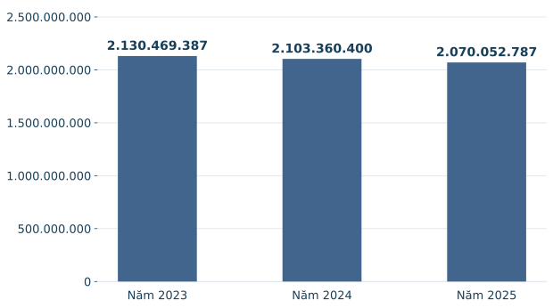
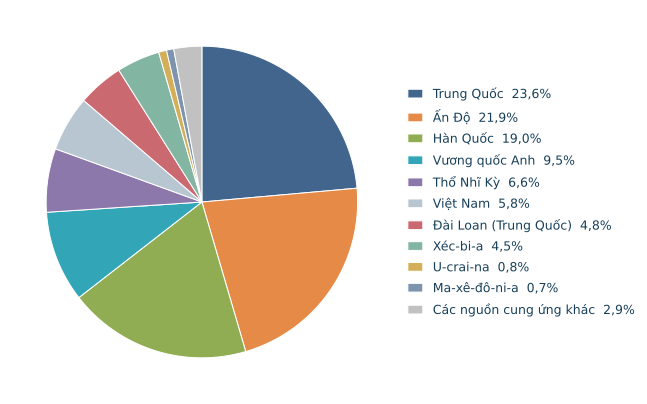
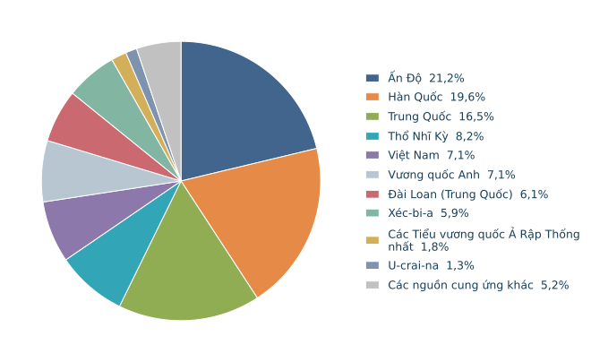
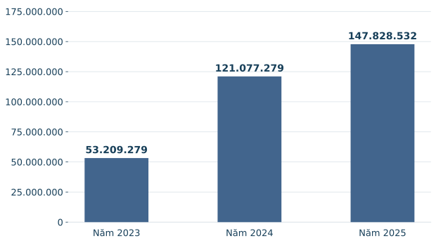
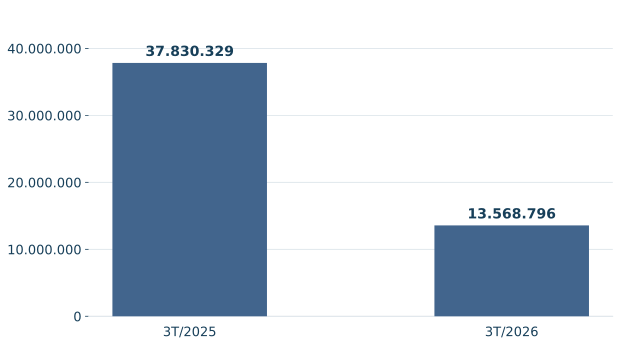

Pakistan khởi xướng điều tra chống bán phá giá đối với băng dính tự dính BOPP dạng cuộn jumbo nhập khẩu từ Việt Nam
Ngày 30 tháng 4 năm 2026, Ủy ban Thuế quan quốc gia Pakistan (National Tariff Commission - NTC) đã đăng thông báo khởi xướng điều tra chống bán phá giá (CBPG) đối với sản phẩm băng dính tự dính BOPP dạng cuộn jumbo có xuất xứ và/hoặc nhập khẩu từ Việt Nam. Cụ thể như sau:
1. Thông tin vụ việc
- Sản phẩm bị điều tra: băng dính làm từ màng polypropylene định hướng hai trục (BOPP) dạng cuộn jumbo (tiếng Anh: Biaxially Oriented Polypropylene (BOPP) Self Adhesive Tapes - Jumbo Rolls).
- Mã phân loại theo Biểu thuế hải quan Pakistan: 3919.9010 và 3919.9090.
- Cơ quan điều tra: Ủy ban Thuế quan quốc gia Pakistan (National Tariff Commission - NTC).
- Nguyên đơn: Công ty Universal Coating Films (Pvt.) Limited, Karachi và Công ty Tri-Pack Films Limited, Karachi. Trước đó các công ty này đã nộp đơn kiện vào ngày 24/3/2026
- Ngày khởi xướng điều tra: 30 tháng 4 năm 2026.
- Thời kỳ điều tra bán phá giá: từ ngày 01 tháng 01 năm 2025 đến ngày 31 tháng 12 năm 2025.
- Thời kỳ điều tra thiệt hại: từ ngày 01 tháng 01 năm 2023 đến ngày 31 tháng 12 năm 2025.
- Cáo buộc chính: sản phẩm bị điều tra từ Việt Nam bị cáo buộc bán phá giá vào thị trường Pakistan, gây thiệt hại hoặc đe dọa gây thiệt hại đối với ngành sản xuất trong nước Pakistan.
2. Quy trình, thủ tục điều tra
- Đăng ký làm bên liên quan: Các bên liên quan phải tự nhận diện và đăng ký với cơ quan điều tra trong vòng 10 ngày kể từ ngày công bố thông báo này. Đây là thủ tục bắt buộc và không có tiền lệ gia hạn. Hồ sơ đăng ký cần cung cấp đầy đủ các thông tin sau:
+ Tên công ty và lĩnh vực kinh doanh
+ Họ tên người đại diện được ủy quyền
+ Địa chỉ, số điện thoại, số fax và email liên lạc
- Nộp quan điểm, bình luận và chứng cứ: các bên liên quan có thể nộp ý kiến bằng văn bản, bình luận và tài liệu/chứng cứ liên quan cho Cơ quan điều tra trong thời hạn 45 ngày kể từ ngày đăng tin trên Công báo. Địa chỉ cụ thể như sau:
Ủy ban Thuế quan Quốc gia Pakistan
Tòa nhà State Life số 5, khu Blue Area, Islamabad, Pakistan
Website chính thức: www.ntc.gov.pk (để cập nhật diễn biến vụ việc).
- Quy định về bảo mật: Tài liệu mật phải được đánh dấu rõ ràng là “Confidential” theo Mục 31 của Đạo luật. Các bên nộp tài liệu mật bắt buộc phải gửi kèm một bản tóm tắt không bảo mật (non-confidential summary) để đưa vào Hồ sơ Công khai.
- Kết luận sơ bộ: dự kiến ban hành không sớm hơn 60 ngày và không muộn hơn 180 ngày kể từ ngày khởi xướng điều tra.
- Kết luận cuối cùng: dự kiến ban hành trong vòng 180 ngày kể từ ngày đăng Công báo về kết luận sơ bộ.
4. Khuyến nghị
Nhằm ứng phó với vụ việc trên, Cục PVTM khuyến nghị các doanh nghiệp sản xuất, xuất khẩu liên quan cần khẩn trương triển khai một số công việc sau:
- Khẩn trương rà soát hoạt động xuất khẩu sản phẩm bị điều tra sang Pakistan, đặc biệt về lượng xuất khẩu, giá xuất khẩu trong thời kỳ điều tra;
- Chủ động đăng ký làm bên liên quan đúng thời hạn, chuẩn bị phương án tham gia vụ việc và cân nhắc nộp bình luận, chứng cứ trong thời hạn do NTC quy định;
- Theo dõi chặt chẽ diễn biến vụ việc, nghiên cứu quy định và trình tự thủ tục điều tra CBPG của Pakistan;
- Hợp tác đầy đủ với cơ quan điều tra Pakistan trong suốt quá trình điều tra: bao gồm trả lời đầy đủ và đúng hạn các bản câu hỏi điều tra theo thể thức yêu cầu, tham gia thẩm tra tại chỗ (nếu có), gửi bình luận phản biện đúng hạn…; mọi hành vi không hợp tác hoặc hợp tác không đầy đủ có thể dẫn đến việc cơ quan điều tra sử dụng dữ liệu sẵn có bất lợi, khiến mức thuế của doanh nghiệp tăng cao;
- Thường xuyên trao đổi, liên hệ với Cục Phòng vệ thương mại để nhận được hỗ trợ kịp thời.
Thông tin chi tiết liên hệ: Phòng Xử lý phòng vệ thương mại nước ngoài, Cục Phòng vệ thương mại, Bộ Công Thương, 54 Hai Bà Trưng, Hà Nội. Chuyên viên phụ trách: Bùi Anh Dũng. Email: dungban@moit.gov.vn; nganha@moit.gov.vn, SĐT: 0968456865.
TIN TRONG NƯỚC
Liên minh Kinh tế Á - Âu khởi xướng điều tra tự vệ đối với lốp xe ô tô nhập khẩu
Cục Phòng vệ thương mại nhận được thông tin về việc Cục Bảo vệ thị trường nội địa thuộc Ủy ban Kinh tế Á - Âu (EEC) mới đây đã thông báo khởi xướng điều tra áp dụng biện pháp tự vệ đối với lốp xe ô tô nhập khẩu vào lãnh thổ hải quan của Liên minh Kinh tế Á - Âu (EAEU), cụ thể như sau:
1. Thông tin chung về vụ việc
- Hàng hóa bị điều tra: lốp xe ô tô có đường kính vành từ 13 đến 21 inch, nhập khẩu vào lãnh thổ hải quan của Liên minh Kinh tế Á - Âu (trừ một số lốp xe có đường kính vành từ 17,5 inch đến 21 inch, có chỉ số tải trọng vượt quá 115 và thuộc các ký hiệu cấp tốc độ F, G, J, K, L, M, N, P, Q, R, S, T, U, H theo quy định kỹ thuật liên quan);
- Mã HS tham khảo theo Thông báo của EEC: 4011 10 000 3, 4011 10 000 9, 4011 20 100 0, 4011 20 900 0, 8708 70 500 9 và 8708 70 990 9;
- Ngày khởi xướng điều tra: ngày 07/5/2026, thông báo khởi xướng điều tra được đăng tải tại chuyên mục “Bảo vệ thị trường nội địa” trên Cổng thông tin chung và dữ liệu mở của EAEU, đồng thời được công bố trên trang thông tin điện tử chính thức của EAEU.
2. Thủ tục điều tra
- Thời hạn đăng ký tham gia vụ việc: trong vòng 25 ngày lịch kể từ ngày khởi xướng điều tra, các bên liên quan có thể gửi đơn thông báo về ý định tham gia vụ việc để được công nhận tư cách bên liên quan trong quá trình điều tra.
- Thời hạn để yêu cầu điều trần công khai: trong vòng 45 ngày kể từ ngày khởi xướng điều tra (dự kiến ngày 21/6/2026).
- Thời hạn để bình luận về vụ việc: trong vòng 60 ngày kể từ ngày khởi xướng điều tra (dự kiến ngày 06/7/2026). Các ý kiến phải được lập bằng văn bản bằng tiếng Nga và gửi tới Cơ quan điều tra, tại địa chỉ:
Vụ Bảo vệ Thị trường Nội địa
Ủy ban Kinh tế Á-Âu (Eurasian Economic Commission)
Smolensky Boulevard, số 3/5,
Moscow, Liên bang Nga, mã bưu chính 119121.
Điện thoại: +7 (495) 669-24-00, máy nhánh 4964, 4957, 1316, 3097, 4955, 1272.
Email: tradedefence@eecommission.org.
- Nghĩa vụ bảo mật: Theo thông báo của EEC, các bên liên quan đã đăng ký tham gia vụ việc có quyền nhận bản không mật của đơn yêu cầu, tiếp cận các tài liệu không mật trong hồ sơ điều tra, tham gia các phiên điều trần công khai và tham vấn trong quá trình điều tra.
Trường hợp bên liên quan cung cấp thông tin mật cho Cơ quan điều tra, bên cung cấp thông tin phải nộp kèm bản không mật của thông tin đó. Hướng dẫn về việc chuẩn bị bản không mật được EEC đăng tải tại đường dẫn: https://remedies.eaeunion.org/dimd/assets/documents/DIMD_guidance_on_the_preparation_of_non-confidential_documents.pdf.
Ngoài ra, toàn bộ thông tin không mật do các bên liên quan gửi bằng văn bản cho Cơ quan điều tra sẽ được cung cấp để các bên liên quan tham gia vụ việc có thể xem xét, nghiên cứu theo quy định của EAEU.
3. Khuyến nghị
Nhằm ứng phó hiệu quả vụ việc, Cục Phòng vệ thương mại khuyến nghị Hiệp hội và doanh nghiệp sản xuất, xuất khẩu liên quan như sau:
- Đối với Hiệp hội:
+ Thông báo đến các doanh nghiệp hội viên; rà soát các doanh nghiệp sản xuất, xuất khẩu lốp xe có liên quan sang thị trường EAEU trong giai đoạn 2022 - 2025;
+ Liên hệ, trao đổi với Cục Phòng vệ thương mại - Bộ Công Thương để được hỗ trợ kịp thời.
- Đối với các doanh nghiệp sản xuất, xuất khẩu liên quan:
+ Đăng ký làm bên liên quan trong thời hạn quy định;
+ Gửi yêu cầu điều trần công khai (nếu có) trong vòng 45 ngày kể từ ngày khởi xướng điều tra;
+ Gửi bình luận, thông tin, chứng cứ liên quan đến vụ việc (nếu có) trong vòng 60 ngày kể từ ngày khởi xướng điều tra;
+ Theo dõi diễn biến của vụ việc; chủ động nghiên cứu, nắm vững quy định, trình tự, thủ tục điều tra tự vệ của EAEU;
+ Rà soát hoạt động xuất khẩu sang EAEU, nhất là các sản phẩm có đường kính vành từ 13 đến 21 inch và các mã HS nêu tại Thông báo khởi xướng; chuẩn bị hồ sơ, số liệu sản xuất, xuất khẩu khi cần thiết;
+ Hợp tác đầy đủ với Cơ quan điều tra trong suốt quá trình của vụ việc;
+ Trao đổi, liên hệ với Cục PVTM để nhận được sự hỗ trợ kịp thời.
Thông tin chi tiết liên hệ:
Phòng Xử lý phòng vệ thương mại nước ngoài, Cục Phòng vệ thương mại, Bộ Công Thương, 54 Hai Bà Trưng, Hà Nội (Chuyên viên phụ trách: Bùi Anh Dũng), E-mail: dungban@moit.gov.vn, nganha@moit.gov.vn. SĐT: 0968456865.
TIN TRONG NƯỚC
Hoa Kỳ khởi xướng điều tra chống bán phá giá và chống trợ cấp đối với sản phẩm máy nén khí nhập khẩu từ Việt Nam
Ngày 21 tháng 5 năm 2025, Bộ Thương mại Hoa Kỳ (DOC) đã chính thức khởi xướng điều tra chống bán phá giá (CBPG) và chống trợ cấp (CTC) với máy nén khí nhập khẩu từ Malaysia, Trung Quốc và Việt Nam:
1. Thông tin chung về vụ việc
- Mã vụ việc: A-552-856 (CBPG) và C-552-857(CTC)
- Sản phẩm bị đề nghị điều tra: sản phẩm máy nén khí chủ yếu thuộc mã HS 8414.80.16.15, 8414.80.16.25, 8414.80.16.35 và 84.14.80.16.85.
- Nguyên đơn: Công ty MAT Industries, LLC
- Ngày nhận đơn: Ngày 30 tháng 4 năm 2026.
- Doanh nghiệp xuất khẩu bị cáo buộc bán phá giá và được trợ cấp: Đơn kiện nêu tên 12 doanh nghiệp của Việt Nam sản xuất, xuất khẩu sản phẩm bị điều tra
- Thời kỳ điều tra CBPG: 01/10/2025-31/03/2026
- Thời kỳ điều tra CTC: Năm 2025.
- Thời kỳ điều tra thiệt hại: 03 năm (2023-2025).
- Kim ngạch xuất khẩu: Theo số liệu của Ủy ban thương mại quốc tế Hoa Kỳ (ITC), trong năm 2025, Việt Nam xuất khẩu lần lượt khoảng 81 triệu USD sản phẩm bị cáo buộc sang Hoa Kỳ, chiếm 6% thị phần nhập khẩu. Giá trị xuất khẩu sản phẩm này của Việt Nam sang Hoa Kỳ đã tăng 42% so với năm 2023.
1.1. Thông tin cáo buộc bán phá giá
- Nước và giá trị thay thế: Tương tự như các vụ việc gần đây, do Hoa Kỳ coi Việt Nam là quốc gia có nền kinh tế phi thị trường, nên DOC sẽ sử dụng các giá trị thay thế của quốc gia thứ ba để tính toán biên độ phá giá cho Việt Nam. Trong vụ việc này, nguyên đơn đề nghị sử dụng Indonesia, Tunisia hoặc El Salvador là quốc gia thay thế do cho rằng các nước này có mức độ phát triển kinh tế tương đồng với Việt Nam và có số lượng đáng kể các nhà sản xuất bị điều tra.
- Biên độ CBPG cáo buộc với hàng hóa xuất khẩu từ Việt Nam: 52,53-106,22% (nếu dùng El Salvador làm quốc gia thay thế); 25,85-132,31% (nếu dùng Indonesia làm quốc gia thay thế); 22,06-140,39 (nếu dùng Tunisia làm quốc gia thay thế).
Các bên có thời hạn bình luận về giá trị thay thế trong vòng 30 ngày trước ngày DOC dự kiến ban hành kết luận sơ bộ của vụ việc.
1.2. Thông tin cáo buộc trợ cấp
- Biên độ CTC bị cáo buộc với hàng hóa xuất khẩu từ Việt Nam: Nguyên đơn không đưa ra cáo buộc với biên độ trợ cấp.
- Các chương trình trợ cấp bị cáo buộc: Nguyên đơn cáo buộc các doanh nghiệp sản xuất/xuất khẩu máy nén khí của Việt Nam đã nhận được 46 chương trình trợ cấp từ Chính phủ, gây thiệt hại đáng kể hoặc đe dọa gây thiệt hại đáng kể cho ngành sản xuất nội địa Hoa Kỳ. Các chương trình trợ cấp bị cáo buộc thuộc các nhóm:
(1) Nhóm các chương trình cho vay và đảm bảo (9 chương trình): Cho vay chính sách từ Ngân hàng Nhà nước Việt Nam và các Ngân hàng chính sách khác, Chương trình hỗ trợ lãi suất từ Ngân hàng Nhà nước Việt Nam, Bao thanh toán xuất khẩu từ các Ngân hàng Thương mại Nhà nước (SOCBs), Bảo lãnh hoạt động xuất khẩu từ SOCBs, Cho vay ưu đãi cho các nhà xuất khẩu từ SOCBs, Tín dụng xuất khẩu từ Ngân hàng Phát triển Việt Nam (VDB), Tín dụng đầu tư từ VDB, Cho vay ưu đãi cho các Chương trình Trung tâm Đổi mới Sáng tạo Quốc gia, Các Chương trình Cho vay tạo điều kiện chuyển đổi sang năng lượng sạch.
(2) Nhóm các chương trình ưu đãi thuế (20 chương trình): Ưu đãi thuế thu nhập cho doanh nghiệp trong khu vực đặc biệt, Ưu đãi thuế thu nhập cho doanh nghiệp xuất khẩu, Ưu đãi thuế cho các khoản đầu tư cũ, Ưu đãi thuế cho các khoản đầu tư mới, Ưu đãi thuế theo Nghị định 60/2012, Ưu đãi thuế thu nhập theo Nghị định số 24, Chương trình thuế thu nhập ưu đãi cho doanh nghiệp có vốn đầu tư nước ngoài, Khấu hao nhanh và Tăng chi phí được khấu trừ, Chương trình ưu đãi thuế thu nhập doanh nghiệp cho các ngành cụ thể, Thuế suất ưu đãi cho các dự án nghiên cứu và phát triển và đầu tư lớn, Ưu đãi thuế thu nhập doanh nghiệp, Gói hỗ trợ cho các ngành công nghiệp vừa và nhỏ, Ưu đãi cho các ngành công nghiệp hỗ trợ, Miễn thuế nhập khẩu đối với hàng nhập khẩu dùng để sản xuất hàng xuất khẩu, Hoàn thuế nhập khẩu đối với nguyên liệu thô dùng để sản xuất hàng xuất khẩu, Miễn thuế nhập khẩu đối với hàng nhập khẩu vào khu công nghiệp, Miễn thuế nhập khẩu đối với nguyên liệu thô nhập khẩu dùng cho các doanh nghiệp chế biến xuất khẩu và khu chế biến xuất khẩu, Miễn thuế nhập khẩu đối với thiết bị và máy móc, Miễn thuế cho các dự án Trung tâm Đổi mới Quốc gia, Miễn các loại thuế khác đối với hàng nhập khẩu nguyên liệu thô, vật tư và linh kiện.
(3) Nhóm các Chương trình Đất đai (6 chương trình): Miễn hoặc giảm tiền thuê đất cho các ngành công nghiệp khuyến khích hoặc khu vực được chọn, Miễn thuế và phí sử dụng đất cho các ngành công nghiệp khuyến khích hoặc khu công nghiệp, Miễn hoặc giảm tiền thuê đất cho các doanh nghiệp đầu tư nước ngoài, Miễn phí thuê đất cho trung tâm đổi mới quốc gia và các dự án của trung tâm, Miễn phí thuê đất cho các dự án đủ điều kiện khác, Miễn và giảm tiền thuê đất cho các doanh nghiệp nằm trong khu đặc biệt.
(4) Nhóm các chương trình hỗ trợ (04 chương trình): Tài trợ khuyến khích xuất khẩu, Tài trợ hỗ trợ đầu tư, Chương trình tài trợ theo Nghị định số 118/2015, Cung cấp dịch vụ với mức giá thấp hơn giá thị trường.
(5) Chương trình tiện ích với giá ưu đãi (04 chương trình): gồm các chương trình cung cấp ga, khí hóa lỏng tự nhiên, điện với mức giá ưu đãi cho các khu công nghiệp và khu chế biến xuất khẩu.
(6) Cho vay chính sách xuyên biên giới từ các tổ chức tài chính Trung Quốc (03 chương trình): Nguyên đơn cáo buộc các chính sách của chính phủ Trung Quốc mang lại lợi ích cho các sản phẩm Việt Nam thông qua các công ty con sở hữu chéo theo “hợp tác năng lực quốc tế” thuộc sáng kiến vành đai và con đường (BRI), các dự án hợp tác năng lực tại Việt Nam, các hỗ trợ tài chính này có thể coi là các khoản trợ cấp có thể bị đối kháng.
Tuy nhiên, trong thông báo khởi xướng, DOC thông báo khởi xướng điều tra 43 chương trình trợ cấp. Danh mục các chương trình khởi xướng cụ thể hiện chưa được thông báo chính thức.
2. Quy trình thủ tục điều tra tiếp theo
Theo quy định điều tra của Hoa Kỳ, có 02 cơ quan tham gia trong một vụ việc điều tra CBPG và CTC: DOC điều tra về hành vi bán phá giá và trợ cấp và chịu trách nhiệm chung về kết quả điều tra trong khi ITC chịu trách nhiệm đánh giá thiệt hại của ngành sản xuất trong nước. Sản phẩm chỉ bị áp thuế CBPG/CTC nếu cả 02 cơ quan đều ban hành kết luận khẳng định. Nếu như trong vụ việc CBPG, chỉ có doanh nghiệp xuất khẩu là đối tượng bị điều tra thì trong vụ việc CTC, Chính phủ cũng là đối tượng bị điều tra.
2.1. Quy trình điều tra của DOC:
(1) Lựa chọn bị đơn bắt buộc
Sau khi khởi xướng điều tra, DOC sẽ ban hành Bản câu hỏi về Lượng và Giá trị (Q&V) cho vụ việc CBPG để thu thập thông tin nhằm lựa chọn bị đơn bắt buộc. Tất cả các doanh nghiệp nằm trong danh sách nhận bản câu hỏi Q&V của DOC, các doanh nghiệp có xuất khẩu trong giai đoạn điều tra và các doanh nghiệp muốn được hưởng thuế suất CBPG riêng rẽ cần phải trả lời. Bản câu hỏi sẽ được đăng tải trên địa chỉ: https://www.trade.gov/ec-adcvd-qv-questionnaire và https://www.trade.gov/ec-adcvd-case-announcements
Theo thông lệ, DOC sẽ dựa trên phản hồi Bản câu hỏi Q&V và số liệu của Hải quan Hoa Kỳ để lựa chọn bị đơn bắt buộc (thường là các nhà xuất khẩu lớn nhất của Việt Nam về lượng trong giai đoạn điều tra). Các bị đơn bắt buộc sẽ được điều tra và xác định biên độ phá giá/biên độ trợ cấp riêng.
(2) Đăng ký hưởng thuế suất riêng rẽ (chỉ áp dụng với vụ việc CBPG)
Riêng trong vụ việc điều tra CBPG, trong trường hợp không được lựa chọn làm bị đơn bắt buộc, các doanh nghiệp phải đăng ký hưởng thuế suất riêng rẽ để được tính thuế dựa trên kết quả của bị đơn bắt buộc (nếu không sẽ bị áp dụng mức thuế toàn quốc, thường bằng mức cáo buộc). Các doanh nghiệp cần chứng minh hoạt động độc lập, không chịu sự kiểm soát của Chính phủ cả về pháp lý và thực tiễn. Mức thuế suất riêng rẽ bằng bình quân gia quyền các biên độ phá giá của các bị đơn bắt buộc (loại trừ các biên độ bằng 0, de minimis[1], và biên độ dựa trên dữ liệu sẵn có bất lợi). Thời hạn để nộp Đơn xin hưởng thuế suất riêng rẽ là 21 ngày kể từ ngày khởi xướng.
Trong trường hợp doanh nghiệp không nộp Đơn xin hưởng thuế suất riêng rẽ hoặc doanh nghiệp đã nộp, nhưng không được chấp nhận, thì biên độ phá giá dành cho các doanh nghiệp sẽ là mức thuế suất toàn quốc(thường rất cao, có thể bằng với biên độ phá giá cáo buộc).
(3) Bình luận và phản biện về phạm vi sản phẩm
Các bên liên quan có thể nêu ý kiến về phạm vi sản phẩm bị điều tra. Thời hạn bình luận hiện là ngày 09 tháng 6 năm 2026 và thời hạn phản biện là ngày 22 tháng 6 năm 2026.
(4) Trả lời Bản câu hỏi điều tra
Sau khi xác định được bị đơn bắt buộc, DOC sẽ ban hành Bản câu hỏi điều tra dành cho bị đơn bắt buộc. Trong vụ việc CTC, DOC sẽ ban hành thêm Bản câu hỏi điều tra dành cho Chính phủ. Thời hạn trả lời thường là 30 ngày kể từ ngày ban hành bản câu hỏi ban đầu (có thể xin gia hạn). DOC có thể ban hành các bản câu hỏi bổ sung với thời hạn ngắn hơn.
(5) Kết luận sơ bộ
DOC có 140 ngày kể từ ngày khởi xướng để ban hành kết luận sơ bộ về bán phá giá và có 65 ngày kể từ ngày khởi xướng để ban hành kết luận sơ bộ về trợ cấp. DOC có thể áp dụng thuế hồi tố đến 90 ngày trước ngày áp thuế sơ bộ trong trường hợp có bằng chứng cho thấy tồn tại “tình trạng khẩn cấp” (nhập khẩu tăng đột biến) theo cáo buộc của Nguyên đơn.
(6) Thẩm tra tại chỗ: sau khi có kết luận sơ bộ, DOC có thể tiến hành thẩm tra tại chỗ doanh nghiệp và Chính phủ (chỉ thẩm tra Chính phủ trong vụ việc CTC).
(7) Kết luận cuối cùng: 75 ngày từ ngày kể từ ngày ban hành kết luận sơ bộ, có thể gia hạn.
2.2. Quy trình điều tra tại ITC
ITC tập trung điều tra, xác định việc bán phá giá/trợ cấp có phải là nguyên nhân dẫn đến thiệt hại của ngành sản xuất nội địa Hoa Kỳ hay không. Trong trường hợp ITC xác định không có thiệt hại ở giai đoạn Kết luận cuối cùng, vụ việc sẽ được chấm dứt.
3. Một số khuyến nghị ứng phó
- Tiếp tục theo dõi chặt chẽ diễn biến của vụ việc; chủ động nghiên cứu, nắm vững quy định, trình tự, thủ tục điều tra CBPG và CTC của Hoa Kỳ; đa dạng hóa thị trường và mặt hàng xuất khẩu;
- Hợp tác đầy đủ với cơ quan điều tra Hoa Kỳ trong suốt quá trình diễn ra vụ việc. Bất kỳ hành động thể hiện sự bất hợp tác hoặc hợp tác không đầy đủ có thể dẫn tới việc cơ quan điều tra Hoa Kỳ sử dụng các chứng cứ sẵn có bất lợi hoặc áp dụng mức thuế CBPG và CTC cao nhất cho doanh nghiệp;
- Chủ động đăng ký tài khoản ACCESS tại cổng thông tin điện tử của DOC (https://access.trade.gov) nhằm cập nhật thông tin và nộp các Bản trả lời, tài liệu liên quan tới Cơ quan điều tra Hoa Kỳ;
- Thường xuyên phối hợp, cập nhật thông tin cho Cục PVTM để nhận được sự hỗ trợ kịp thời.
Thông tin chi tiết liên hệ: Phòng Xử lý PVTM nước ngoài, Cục PVTM, Bộ Công Thương, 54 Hai Bà Trưng, Cửa Nam, Hà Nội (Chuyên viên phụ trách: Nguyễn Việt Hà, Email: hanv@moit.gov.vn, ngocny@moit.gov.vn. Website: http://trav.gov.vn/.
[1] De minimis: biên độ phá giá tối thiểu là mức biên độ phá giá thấp hơn 2%
TIN TRONG NƯỚC
Úc bổ sung điều tra thêm một công ty Hàn Quốc trong vụ việc chống bán phá giá đối với sản phẩm thép mạ kẽm nhập khẩu (Zinc coated (galvanised) steel) vào Úc
Ngày 30 tháng 4 năm 2026, Ủy ban chống bán phá giá thuộc Bộ Công Nghiệp, Khoa học và Tài Nguyên Úc (Ủy ban) thông báo việc Ủy ban này mở cuộc điều tra số 702 về chống bán phá giá thép mạ kẽm đối với các công ty của Việt Nam và Hàn Quốc theo đơn đề nghị của Công ty Thép Blue Scope, Úc. Công ty này cho rằng các doanh nghiệp của Việt Nam và Hàn Quốc nêu trên đã bán thép tại thị trường Úc thấp hơn giá bình thường, gây thiệt hại cho ngành sản xuất thép của Úc.
Tuy nhiên BlueScope đã nộp đơn xin rút lại đơn đề nghị điều tra vụ việc số 702 này sau khi phát hiện đã bỏ sót nhà xuất khẩu Hàn Quốc Dongkuk Coated Metal Co. Ltd (DCM) trong đơn xin ban đầu và đã được Ủy ban chấp thuận. Ngày 22 tháng 5 năm 2026, Ủy ban chấp nhận đơn nộp mới của BlueScope trong đó bổ sung công ty này của Hàn Quốc và đã đồng ý khởi xướng vụ điều tra số 703 bao gồm DCM cùng với các nhà xuất khẩu đã được nêu tên trước đó trong vụ điều tra 702.
Theo đó, thời kỳ điều tra (POI) vẫn giữ là từ ngày 01 tháng 01 năm 2025 đến 31 tháng 12 năm 2025. Thời hạn mới cho việc nộp bản trả lời của các nhà xuất khẩu là ngày 29 tháng 06 năm 2026. Mặt hàng bị điều tra vẫn gồm các mặt hàng theo các mã thuế quan tại vụ việc 702, gồm: 7210.49.00, 7212.30.00, 7225.92.00 và 7226.99.00.
Thời gian Ủy ban này sẽ hoàn thành cuộc điều tra và có báo cáo lên Bộ trưởng Công nghiệp và Đổi mới sáng tạo và Bộ trưởng Khoa học Ô-xtrây-li-a vào ngày 26 tháng 10 năm 2026.
Để xử lý hiệu quả vấn đề này, Cục Phòng vệ thương mại khuyến nghị doanh nghiệp sản xuất/xuất khẩu sản phẩm liên quan:
- Liên tục cập nhật và hợp tác đầy đủ với Ủy ban trong suốt quá trình diễn ra vụ việc. Bất kỳ hành động thể hiện sự bất hợp tác hoặc hợp tác không đầy đủ có thể dẫn tới việc Cơ quan điều tra Ô-xtrây-li-a sử dụng các chứng cứ sẵn có bất lợi hoặc áp dụng mức thuế chống bán phá giá cao nhất cho doanh nghiệp;
- Đọc kỹ hướng dẫn của Ủy ban để trả lời và nộp bản trả lời câu hỏi theo đúng định dạng và thời hạn quy định (hoặc xin gia hạn nếu cần thiết và phải được Ủy ban đồng ý);
- Chủ động xác định chiến lược kháng kiện phù hợp với doanh nghiệp, đa dạng hóa thị trường và mặt hàng xuất khẩu;
- Thường xuyên phối hợp, cập nhật thông tin cho Cục Phòng vệ thương mại để nhận được sự hỗ trợ kịp thời.
Thông tin chi tiết liên hệ: Phòng Xử lý PVTM nước ngoài, Cục PVTM, Bộ Công Thương, 54 Hai Bà Trưng, P. Cửa Nam, Hà Nội. Công chức phụ trách: Nguyễn Thị Thanh Hương. Email: huongNTTH@moit.gov.vn; ngaNHA@moit.gov.vn
TIN TRONG NƯỚC
Mê-hi-cô khởi xướng rà soát biện pháp chống bán phá giá đối với dây hàn nhập khẩu từ Việt Nam
Ngày 15 tháng 5 năm 2026, Bộ Kinh tế Mê-hi-cô thông báo khởi xướng rà soát biện pháp chống bán phá giá (CBPG) đối với mặt hàng dây hàn nhập khẩu từ Việt Nam trên cơ sở đề nghị của ngành sản xuất trong nước.
1. Một số thông tin vụ việc
- Ngày 23 tháng 12 năm 2024, Mexico đã ban hành quyết định áp mức thuế CBPG chính thức là 36,23% đối với dây hàn từ Việt Nam. Tuy nhiên, vào cuối năm 2025, nguyên đơn gồm các nhà sản xuất nội địa Mexico bao gồm Electrodos Infra, Lincoln Electric và Plásticos y Alambres đã nộp đơn yêu cầu rà soát lại mức thuế này do có sự thay đổi về hoàn cảnh thực tế. Cụ thể, nguyên đơn cáo buộc mức thuế CBPG hiện tại không đủ để ngăn chặn hành vi bán phá giá vì giá nhập khẩu giảm sâu và khối lượng nhập khẩu tăng mạnh; đồng thời đề nghị Bộ Kinh tế Mexico xem xét Việt Nam là một nền kinh tế phi thị trường.
- Sản phẩm bị rà soát: Dây hàn thép cacbon đặc hợp kim với mangan và silic, đường kính từ 0,6 đến 1,6 mm, có hoặc không phủ đồng (mã HS: 7229.20.01, 7229.90.99, 8311.10.99, 8311.30.01 và 8311.90.01);
- Thời kỳ rà soát: từ ngày 01 tháng 01 năm 2025 tới ngày 31 tháng 10 năm 2025;
- Các bên liên quan, bao gồm doanh nghiệp xuất khẩu, nhập khẩu và các cơ quan Chính phủ có thời hạn 23 ngày làm việc để đăng ký tham gia cung cấp thông tin, bằng chứng; thời hạn này được tính sau 5 ngày kể từ ngày quyết định khởi xướng được công bố trên Công báo (DOF).
Các tài liệu do các bên nộp cho Cơ quan điều tra của Mê-hi-cô phải được dịch ra tiếng Tây Ban Nha, công chứng và hợp pháp hóa lãnh sự theo quy định hiện hành.
2. Một số khuyến nghị ứng phó
Để đảm bảo quyền và lợi ích của các doanh nghiệp xuất khẩu của Việt Nam, Cục PVTM khuyến nghị các doanh nghiệp sản xuất, xuất khẩu liên quan:
- Chủ động rà soát các hoạt động xuất khẩu các sản phẩm dây hàn liên quan sang Mê-hi-cô;
- Chuẩn bị bản trả lời, bình luận và hợp tác đầy đủ với Cơ quan điều tra của Mê-hi-cô trong suốt quá trình rà soát;
- Trao đổi thông tin với Cục Phòng vệ thương mại để nhận được sự hỗ trợ kịp thời.
Thông tin chi tiết liên hệ: Phòng Xử lý Phòng vệ thương mại nước ngoài, Cục Phòng vệ thương mại, Bộ Công Thương – 54 Hai Bà Trưng, Cửa Nam, Hà Nội. Cán bộ phụ trách: Nguyễn Hoàng Kiên - Email: kiennh@moit.gov.vn; ngocny@moit.gov.vn.
TIN TRONG NƯỚC
Ukraine khởi xướng điều tra chống bán phá giá đối với thép carbon cán phẳng có phủ xuất xứ từ Thổ Nhĩ Kỳ, Hàn Quốc Ấn Độ và Việt Nam
Cục Phòng vệ thương mại (PVTM) nhận được thông tin về việcngày 22 tháng 5 năm 2026, Ukraine đã đăng thông báo khởi xướng điều tra chống bán phá giá đối với sản phẩm thép carbon cán phẳng có phủ có xuất xứ từ Thổ Nhĩ Kỳ, Hàn Quốc Ấn Độ và Việt Nam. Cụ thể như sau:
1. Thông tin chung về vụ việc
- Sản phẩm bị điều tra: thép carbon cán phẳng có phủ, mạ điện hoặc phủ bằng phương pháp khác, thuộc mã HS: 7210 70, 7210 90 và 7212 40 theo phân loại của Ukraine;
Sản phẩm được loại trừ: bao gồm thép cán phẳng phủ thiếc, thép lá trắng hoặc thép lá thiếc trắng có độ dày 0,14 - 0,28 mm, có hình ảnh in litho và/hoặc lớp phủ bảo vệ bằng vecni, sử dụng để sản xuất bao bì/hộp kim loại thực phẩm, cung cấp dạng tấm có kích thước tối đa 1.000 x 1.000 mm, phân loại theo mã 7210 70 10 00;
- Nước/vùng lãnh thổ bị điều tra: Thổ Nhĩ Kỳ, Việt Nam, Hàn Quốc và Ấn Độ;
- Cơ quan điều tra: Bộ Kinh tế, Môi trường và Nông nghiệp Ukraine (gọi tắt là Bộ Kinh tế);
- Cơ quan ra quyết định: Ủy ban liên ngành về thương mại quốc tế Ukraine (gọi tắt là Ủy ban);
- Ngày đăng công báokhởi xướng điều tra: ngày 26/5/2026.
2. Nội dung chính của thông báo khởi xướng
- Đơn kiện do Công ty trách nhiệm hữu hạn “MODULE - UKRAINE” và Công ty trách nhiệm hữu hạn “POLISTIL” (gọi chung là Nguyên đơn) nộp, yêu cầu khởi xướng điều tra chống bán phá giá đối với hàng nhập khẩu thuộc phạm vi vụ việc;
- Ủy ban xác định đơn kiện có đủ bằng chứng cho thấy hàng hóa bị điều tra có thể được nhập khẩu bán phá giá vào Ukraine; biên độ bán phá giá trên mức tối thiểu và lượng nhập khẩu ở mức đáng kể;
- Theo cáo buộc trong Đơn kiện, trong giai đoạn 2022 - 2024, nhập khẩu từ Thổ Nhĩ Kỳ, Việt Nam, Hàn Quốc và Ấn Độ vào Ukraine tăng 4,5 lần về số lượng tuyệt đối, tăng gấp đôi so với sản xuất nội địa và tăng 2,5 lần so với mức tiêu thụ trong nước. Ngoài ra, giá nhập khẩu trung bình từ các nước bị điều tra có xu hướng giảm từ năm 2023, thấp hơn đáng kể so với giá bình quân sản phẩm tương tự của Nguyên đơn, cản trở việc tăng giá trên thị trường nội địa. Bên cạnh đó, Thổ Nhĩ Kỳ, Việt Nam, Hàn Quốc và Ấn Độ có tiềm năng xuất khẩu đáng kể.
3. Quy trình thủ tục vụ việc điều tra
- Đăng ký bên liên quan và yêu cầu điều trần: trong vòng 30 ngày kể từ ngày công bố thông báo khởi xướng, các bên cần đăng ký làm bên liên quan (theo mẫu đính kèm) và gửi yêu cầu tổ chức phiên điều trần tới Bộ Kinh tế Ukraine.
- Bình luận về việc khởi xướng điều tra: trong vòng 60 ngày kể từ ngày công bố thông báo khởi xướng, các bên cần gửi bình luận và thông tin bằng văn bản liên quan đến việc khởi xướng điều tra tới Bộ Kinh tế Ukraine;
- Ngôn ngữ: Thông tin gửi tới cơ quan điều tra phải được trình bày bằng tiếng Ukraine hoặc ngôn ngữ gốc kèm bản dịch sang tiếng Ukraine.
Trường hợp thông tin có tính chất mật, bên cung cấp cần chuẩn bị cả bản mật và bản công khai đính kèm;
- Đầu mối liên hệ của Cơ quan điều tra:
Tel: (068) 494-16-05
Email: tradedefence@me.gov.ua
Địa chỉ: Bộ Kinh tế Môi trường và Nông nghiệp Ukraine,
Phố Hrushevsky 12/2, Kyiv, 01008
Email tiếp nhận: meconomy@me.gov.ua
Điện thoại: (044) 200-47-53
4. Một số lưu ý, khuyến nghị
Nhằm xử lý hiệu quả đối với vụ việc trên, Cục PVTM khuyến nghị Hiệp hội và các doanh nghiệp liên quan:
- Đối với Hiệp hội:
+ Thông báo về vụ việc tới các doanh nghiệp thành viên có xuất khẩu sản phẩm bị điều tra sang thị trường Ukraine;
+ Khuyến nghị các doanh nghiệp có lợi ích xuất khẩu liên quan sang thị trường Ukraine hợp tác và tham gia vụ việc.
- Đối với doanh nghiệp:
+ Rà soát tình hình xuất khẩu sang Ukraine đối với các mã hàng và mô tả sản phẩm nêu trên để xác định khả năng bị ảnh hưởng;
+ Đối với sản phẩm có khả năng thuộc diện loại trừ, doanh nghiệp cần lưu giữ đầy đủ chứng từ kỹ thuật, giấy chứng nhận chất lượng, tài liệu của nhà sản xuất… để phục vụ chứng minh khi cần thiết;
+ Đăng ký tham gia với tư cách bên liên quan và gửi yêu cầu tổ chức Phiên điều trần (nếu cần thiết) trong thời hạn quy định; soạn thảo và nộp Bình luận đối với thông báo khởi xướng điều tra của Ukraine đúng hạn; chuẩn bị dữ liệu về sản xuất, xuất khẩu, giá bán, chi phí, khách hàng… để phục vụ cho việc trả lời các bản câu hỏi điều tra và thẩm tra (nếu có) của Ukraine;
+ Liên hệ, phối hợp với Cục PVTM trong quá trình xử lý vụ việc để bảo vệ quyền và lợi ích hợp pháp.
Tải thông báo chi tiết tại đây: https://ukurier.gov.ua/uk/news/povidomlennya-pro-prokat/
Thông tin chi tiết liên hệ: Phòng Xử lý PVTM nước ngoài, Cục PVTM, Bộ Công Thương, 54 Hai Bà Trưng, Hà Nội. Chuyên viên phụ trách: Bùi Anh Dũng. Email: dungban@moit.gov.vn; nganha@moit.gov.vn, SĐT: 0968456865.
TIN NƯỚC NGOÀI
Hoa Kỳ chưa xác định áp thuế đối với sản phẩm chất bán dẫn, Đài Loan (Trung Quốc) đã đạt được thỏa thuận ưu đãi
Ngày 28/5/2026, Phó Viện trưởng Hành chính Đài Loan Trịnh Lệ cho biết Hoa Kỳ hiện chưa đưa ra thời gian biểu cụ thể đối với việc áp dụng thuế quan theo Mục 232 đối với sản phẩm chất bán dẫn. Tuy nhiên, các điều khoản ưu đãi dành cho Đài Loan đã được hai bên thống nhất trong thỏa thuận thương mại song phương ký kết vào tháng 01/2026.
Trước đó, theo thông báo đăng trên Công báo Liên bang Hoa Kỳ, Chính phủ Hoa Kỳ sẽ miễn trừ thuế quan đối với thép, nhôm và đồng áp lên linh kiện máy bay nhập khẩu từ Đài Loan (Trung Quốc). Đồng thời, Hoa Kỳ cũng điều chỉnh mức thuế xuống tối đa 15% đối với một số nhóm hàng hóa nhập khẩu từ Đài Loan (Trung Quốc) theo cam kết trong thỏa thuận thương mại song phương. Các mặt hàng được hưởng ưu đãi bao gồm phụ tùng ô tô, gỗ, gỗ xẻ và các sản phẩm phái sinh từ gỗ. Quy định này được áp dụng hồi tố từ ngày 01/5/2026 và chính thức được công bố vào ngày 28/5/2026 theo giờ Hoa Kỳ.
Các mức thuế này trước đó được áp dụng theo Điều 232 của Đạo luật Mở rộng Thương mại năm 1962. Quy định này cho phép Tổng thống Hoa Kỳ áp dụng các biện pháp hạn chế nhập khẩu hoặc áp thuế bổ sung nếu Bộ Thương mại Hoa Kỳ kết luận mặt hàng nhập khẩu có thể đe dọa an ninh quốc gia. Mục 232 là cơ chế điều tra an ninh quốc gia của Hoa Kỳ đối với các mặt hàng nhập khẩu được xem là có ảnh hưởng đến an ninh quốc gia, bao gồm chất bán dẫn, dược phẩm và một số sản phẩm công nghệ chiến lược khác.
Phát biểu tại Đài Bắc, bà Trịnh Lệ Quân cho biết phía Hoa Kỳ nhiều lần đề cập khả năng áp dụng các biện pháp thuế quan theo Mục 232 đối với chất bán dẫn nhập khẩu. Tuy nhiên, thông qua thỏa thuận thương mại tháng 01/2026, Đài Loan (Trung Quốc) đã bảo đảm được cơ chế đối xử tối huệ quốc đối với ngành bán dẫn.
Theo bà Trịnh Lệ Quân, điều này đồng nghĩa với việc nếu Hoa Kỳ triển khai thuế quan đối với chất bán dẫn theo Mục 232 trong tương lai, các doanh nghiệp Đài Loan (Trung Quốc) đầu tư tại Hoa Kỳ sẽ được hưởng các điều kiện ưu đãi tương ứng theo những cam kết đã được thống nhất trước đó.
Bà Trịnh Lệ Quân cũng nhấn mạnh rằng các điều khoản ưu đãi này sẽ tiếp tục được duy trì và hiện phía Hoa Kỳ vẫn chưa đưa ra bất kỳ lộ trình cụ thể nào liên quan đến việc áp dụng thuế quan theo Mục 232 đối với sản phẩm bán dẫn.
Đài Loan (Trung Quốc hiện là một trong những trung tâm sản xuất chất bán dẫn lớn nhất thế giới, đồng thời là nơi đặt trụ sở của Công ty Sản xuất Chất bán dẫn Đài Loan (TSMC) – doanh nghiệp gia công chip lớn nhất toàn cầu.
Trong những năm gần đây, TSMC đã đẩy mạnh đầu tư tại Hoa Kỳ và hiện đang triển khai kế hoạch đầu tư khoảng 165 tỷ USD để xây dựng các nhà máy sản xuất chất bán dẫn tại bang Arizona.
Theo giới quan sát, việc Đài Loan đạt được các cam kết ưu đãi trước khi Hoa Kỳ hoàn tất quá trình xem xét theo Mục 232 cho thấy tầm quan trọng chiến lược của ngành bán dẫn Đài Loan trong chuỗi cung ứng công nghệ toàn cầu, đồng thời phản ánh nỗ lực của Washington trong việc thu hút đầu tư và tăng cường năng lực sản xuất chip trong nước.
Tổng hợp từ reuters.com
TIN NƯỚC NGOÀI
Chính sách bảo hộ thép của Anh có thể ảnh hưởng đến việc triển khai FTA với Ấn Độ
Hiệp định thương mại tự do (FTA) giữa Ấn Độ và Vương quốc Anh đang phát sinh những vướng mắc ngay trước thời điểm triển khai khi Chính phủ Anh quyết định tăng cường các biện pháp bảo hộ đối với thép nhập khẩu, Các doanh nghiệp xuất khẩu và chuyên gia thương mại Ấn Độ cho rằng động thái này có thể làm suy giảm đáng kể những lợi ích mà Ấn Độ kỳ vọng đạt được từ Hiệp định Đối tác Kinh tế và Thương mại Toàn diện (CETA), đặc biệt đối với các ngành xuất khẩu chủ lực như thép và cơ khí chế tạo. Theo Bộ Thương mại Ấn Độ, FTA giữa hai nước ban đầu được kỳ vọng có thể chính thức có hiệu lực trong tháng 5/2026. Tuy nhiên, quá trình triển khai hiện đang gặp trở ngại liên quan đến cơ chế biện pháp tự vệ thép mới của Anh.
Đáng chú ý, Vương quốc Anh đã quyết định gia hạn các biện pháp bảo hộ đối với một số mặt hàng thép nhập khẩu nhằm bảo vệ ngành sản xuất trong nước trước áp lực từ tình trạng dư thừa công suất toàn cầu, sự gia tăng của thép giá thấp trên thị trường quốc tế và xu hướng siết chặt các yêu cầu liên quan đến giảm phát thải cac-bon và tiêu chuẩn môi trường trong thương mại quốc tế. Theo quy định mới dự kiến có hiệu lực từ ngày 1/7/2026, Anh sẽ cắt giảm khoảng 60% hạn ngạch nhập khẩu được miễn thuế, đồng thời áp mức thuế lên tới 50% đối với phần hàng hóa vượt hạn ngạch.
Giới chuyên gia thương mại Ấn Độ cho rằng động thái này phát đi tín hiệu thiếu tích cực đối với cộng đồng doanh nghiệp xuất khẩu trong bối cảnh FTA giữa hai nước đang được chuẩn bị được triển khai. Theo đó, các biện pháp bảo hộ thép của Anh có thể hạn chế đáng kể khả năng tận dụng ưu đãi thuế quan và cơ hội mở rộng thị phần của doanh nghiệp Ấn Độ tại thị trường Anh.
Ông Rajesh Agrawal, Thư ký Thương mại Ấn Độ, cho biết các biện pháp tự vệ thép của Anh chưa được đưa vào trong quá trình đàm phán FTA giữa hai nước. Tuy nhiên, hai bên hiện đang tiếp tục trao đổi nhằm tìm kiếm một giải pháp phù hợp để sớm đưa hiệp định vào thực thi.
Trong khi đó, ông Pankaj Chadha, Chủ tịch Hội đồng Xúc tiến Xuất khẩu Kỹ thuật Ấn Độ (EEPC Ấn Độ), nhận định các biện pháp tự vệ đối với thép nhập khẩu của Anh mang tính không công bằng và có thể ảnh hưởng đáng kể đến khả năng tiếp cận thị trường thép và các sản phẩm kỹ thuật của Ấn Độ sang thị trường Anh.
Theo giới chuyên gia, ngành thép đang trở thành một trong những lĩnh vực nhạy cảm nhất trong quan hệ thương mại giữa Anh và Ấn Độ. Trong bối cảnh Anh tăng cường bảo vệ ngành sản xuất thép trong nước trước áp lực cạnh tranh từ hàng nhập khẩu giá thấp, Ấn Độ lại kỳ vọng mở rộng xuất khẩu thép thông qua các ưu đãi thuế quan trong khuôn khổ FTA.
Bên cạnh đó, vụ việc cũng phản ánh xu hướng gia tăng sử dụng các công cụ phòng vệ thương mại trên toàn cầu đối với ngành thép, bao gồm các biện pháp chống bán phá giá, chống trợ cấp và tự vệ thương mại. Xu hướng này diễn ra trong bối cảnh nhiều nền kinh tế lớn đang đối mặt với tình trạng dư thừa công suất và áp lực cạnh tranh ngày càng gia tăng từ thép nhập khẩu giá thấp, mặc dù các hiệp định thương mại tự do tiếp tục được thúc đẩy, các công cụ phòng vệ thương mại vẫn giữ vai trò quan trọng trong chính sách thương mại của nhiều quốc gia nhằm bảo vệ các ngành sản xuất nhạy cảm trước áp lực cạnh tranh từ hàng nhập khẩu.
Tổng hợp từ economictimes.indiatimes.com
TIN NƯỚC NGOÀI
Pa-kit-xtan khởi xướng điều tra chống bán phá giá đối với thép cán nguội phủ màu nhập khẩu từ Trung Quốc
Ủy ban Thuế quan Quốc gia Pa-kit-xtan (NTC) mới đây đã thông báo khởi xướng điều tra chống bán phá giá đối với sản phẩm thép cán nguội phủ màu nhập khẩu từ Trung Quốc, sản phẩm bị điều tra thuộc các mã HS: 7210.70.10, 7210.70.20, 7210.70.90, 7210.90.10, 7210.90.90, 7212.40.10, 7212.40.90 và 7225.99.00.
Sản phẩm thuộc phạm vi điều tra bao gồm các sản phẩm thép cán nguội dạng phẳng được sơn phủ, phủ màu hoặc phủ hữu cơ, ở dạng cuộn hoặc tấm, có hoặc không có lớp phủ kim loại nền như kẽm, hợp kim nhôm-kẽm hoặc các loại lớp phủ khác.
Hàng hóa bị điều tra bao gồm cả thép hợp kim và thép không hợp kim, thuộc chất lượng tiêu chuẩn hoặc phi tiêu chuẩn, được cung cấp dưới dạng cuộn, tấm phẳng hoặc tấm định hình như dạng hình thang, dạng sóng, dạng lượn sóng hoặc các dạng định hình khác. Sản phẩm có thể được phủ nhiều loại sơn với màu sắc khác nhau trên một hoặc cả hai bề mặt.
Vụ việc được khởi xướng trên cơ sở đơn kiện do Công ty International Steels Limited có trụ sở tại Karachi đệ trình ngày 16/3/2026. Doanh nghiệp cho rằng hàng hóa nhập khẩu từ Trung Quốc đang gây thiệt hại đáng kể cho ngành sản xuất trong nước đối với sản phẩm thép cán nguội phủ màu.
Theo thông báo của NTC, thời kỳ điều tra hành vi bán phá giá được xác định từ ngày 01/01/2025 đến ngày 31/12/2025. Trong khi đó, giai đoạn rà soát thiệt hại của ngành sản xuất trong nước kéo dài từ tháng 01/2023 đến tháng 12/2025.
Theo quy định của Pa-kit-xtan, kết luận sơ bộ của vụ việc dự kiến sẽ được ban hành trong thời hạn từ 60 đến 180 ngày kể từ ngày thông báo khởi xướng điều tra.
Tổng hợp từ mysteel.net
TIN NƯỚC NGOÀI
Năm quốc gia EU kêu gọi tăng cường các biện pháp phòng vệ thương mại
Pháp, I-ta-li-a, Tây Ban Nha, Hà Lan và Lít-va đã kêu gọi Liên minh châu Âu (EU) tăng cường các công cụ phòng vệ thương mại nhằm bảo vệ hiệu quả hơn ngành sản xuất trong khối trước áp lực gia tăng từ hàng hóa nhập khẩu giá rẻ. Động thái này được cho là chủ yếu nhằm ứng phó với tình trạng gia tăng hàng hóa nhập khẩu từ Trung Quốc vào thị trường EU.
Đề xuất được đưa ra trước cuộc họp nội bộ của Ủy ban châu Âu (EC) về quan hệ thương mại với Trung Quốc, dự kiến diễn ra vào ngày 29/5/2026, trong bối cảnh EU gia tăng quan ngại về tình trạng mất cân bằng thương mại và tác động của hàng hóa nhập khẩu giá thấp đối với ngành sản xuất trong khối.
Trong tài liệu đề ngày 22/5/2026 gửi tới EC, năm quốc gia thành viên EU cho rằng các công cụ phòng vệ thương mại hiện hành của EU chưa đáp ứng đầy đủ yêu cầu bảo vệ ngành sản xuất nội khối do còn tồn tại một số hạn chế, bao gồm thời gian kéo dài, phạm vi sản phẩm điều tra tương đối hẹp và nguy cơ lẩn tránh biện pháp thông qua hoạt động chuyển tải qua nước thứ ba.
Mặc dù tài liệu không đề cập trực tiếp đến Trung Quốc, phần lớn nội dung được cho là nhằm vào hàng hóa xuất khẩu từ quốc gia này. Theo số liệu của EU, khoảng 75% các vụ điều tra chống bán phá giá và chống trợ cấp hiện nay của khối liên quan đến hàng hóa có xuất xứ từ Trung Quốc. Năm 2025, thâm hụt thương mại của EU với Trung Quốc đã tăng lên khoảng 360 tỷ euro làm gia tăng quan ngại về áp lực cảnh tranh đối với ngành sản xuất trong khối.
Trên cơ sở đó, các quốc gia thành viên đề xuất EC xem xét mở rộng phạm vi điều tra chống bán phá giá và chống trợ cấp theo hướng không chỉ giới hạn đối với một số sản phẩm cụ thể mà có thể áp dụng ở cấp độ toàn ngành trong trường hợp cần thiết. Đồng thời, EU cũng được đề nghị tăng cường sử dụng các biện pháp tự vệ nhằm hạn chế nhập khẩu đối với các ngành sản xuất đang chịu áp lực lớn từ hàng hóa giá thấp.
Ngoài ra, các quốc gia thành viên cũng đề xuất siết chặt các quy định liên quan đến hàm lượng giá trị gia tăng và tiêu chí xuất xứ tại nước thứ ba nhằm hạn chế hành vi lẩn tránh biện pháp phòng vệ thương mại thông qua hoạt động chuyển tải hàng hóa.
Một đề xuất đáng chú ý khác là cho phép EU áp dụng biện pháp chống trợ cấp trực tiếp đối với doanh nghiệp nhận trợ cấp, thay vì chỉ áp dụng đối với hàng hóa nhập khẩu từ một quốc gia cụ thể như hiện nay.
Bên cạnh đó, tài liệu cũng đề xuất xây dựng thêm một công cụ mới nhằm giảm mức độ phụ thuộc vào nguồn cung từ một quốc gia nước ngoài đối với các sản phẩm và chuỗi cung ứng chiến lược của EU.
Theo kế hoạch, EC sẽ tiến hành rà soát trong quý III/2026 nhằm đánh giá khả năng đẩy nhanh quá trình áp dụng các biện pháp phòng vệ thương mại, đồng thời xem xét nhu cầu xây dựng thêm các công cụ mới để xử lý tình trạng dư thừa công suất toàn cầu.
Trước đó, ngày 19/5/2026, Nghị viện châu Âu đã thông qua các biện pháp mới nhằm tăng cường bảo vệ thị trường thép EU. Theo quy định mới, hạn ngạch nhập khẩu thép miễn thuế được giảm xuống còn 18,3 triệu tấn/năm, giảm khoảng 47% so với mức hạn ngạch năm 2024. Đồng thời, EU cũng nâng mức thuế áp dụng đối với lượng thép nhập khẩu vượt hạn ngạch từ 25% lên 50%, bao gồm cả các sản phẩm thép không thuộc phạm vi áp dụng hạn ngạch nhập khẩu.
Tổng hợp từ gmk.center
TIN NƯỚC NGOÀI
Hàn Quốc đề xuất áp thuế chống bán phá giá với sản phẩm thép cán nóng nhập khẩu từ Trung Quốc và Nhật Bản
Bộ Kinh tế và Tài chính Hàn Quốc mới đây đã thông báo kế hoạch áp dụng thuế chống bán phá giá chính thức đối với sản phẩm thép cán nóng bằng thép cac bon và thép hợp kim nhập khẩu từ Trung Quốc và Nhật Bản trong thời hạn 5 năm. Sản phẩm thuộc phạm vi áp dụng biện pháp thuộc mã HS: 7208.10.1000, 7208.10.9000, 7208.25.1000, 7208.25.9000, 7208.26.1000, 7208.26.9000, 7208.27.1000, 7208.27.9000, 7208.36.1000, 7208.36.9000, 7208.37.1000, 7208.37.9000, 7208.38.1000, 7208.38.9000, 7208.39.1000, 7208.39.9000, 7208.40.0000, 7208.53.1000, 7208.53.9000, 7208.54.1000, 7208.54.9000, 7208.90.0000, 7211.13.0000, 7211.14.1000, 7211.14.9000, 7211.19.1000, 7211.19.9000, 7225.30.1000, 7225.30.9010, 7225.30.9091, 7225.30.9092, 7225.30.9099, 7225.40.1000, 7225.40.9092, 7226.20.0000, 7226.91.1000, 7226.91.2000, and 7226.91.9000.
Quyết định được đưa ra trên cơ sở kết luận điều tra của Ủy ban Thương mại Hàn Quốc (KTC) trong vụ việc khởi xướng từ tháng 3/2025. Theo KTC, hàng hóa nhập khẩu bị bán phá giá đã gây thiệt hại đáng kể cho ngành sản xuất trong nước của Hàn Quốc. Theo thông báo, mức thuế chống bán phá giá dự kiến áp dụng dao động từ 28,16% đến 33,43%, tùy theo doanh nghiệp và quốc gia xuất khẩu.
Trước đó, Hàn Quốc đã áp dụng biện pháp chống bán phá giá tạm thời đối với sản phẩm nêu trên từ tháng 7/2025 và tiếp tục gia hạn biện pháp vào tháng 12/2025 trong thời gian chờ ban hành kết luận cuối cùng.
Sản phẩm thuộc phạm vi áp dụng biện pháp bao gồm thép cán nóng bằng thép cac - bon và thép hợp kim được sản xuất dưới dạng cuộn, tấm và bản thép.
Tuy nhiên, một số sản phẩm được loại trừ khỏi phạm vi áp dụng biện pháp, bao gồm: sản phẩm thép không gỉ; sản phẩm thép cán phẳng có độ dày từ 4,75 mm trở lên; và sản phẩm có chiều rộng vượt quá 600 mm ở dạng không cuộn hoặc đã qua cán nguội.
Ngoài ra, các doanh nghiệp đã chấp nhận cam kết điều chỉnh giá với cơ quan điều tra sẽ được miễn áp dụng thuế chống bán phá giá. Tuy nhiên, trong trường hợp doanh nghiệp không thực hiện đúng cam kết về giá, cơ quan chức năng Hàn Quốc sẽ áp dụng biện pháp chống bán phá giá theo quy định.
Theo thông báo, các bên liên quan có thể gửi ý kiến đối với đề xuất áp thuế trước ngày 15/6/2026. Thời điểm chính thức áp dụng biện pháp hiện chưa được công bố.
Tổng hợp từ yieh.com
TIN NƯỚC NGOÀI
Ô-xtrây-li-a điều tra chống bán phá giá và chống trợ cấp đối với cửa ra vào và cửa sổ nhôm nhập khẩu từ Trung Quốc
Trong bối cảnh Ô-xtrây-li-a gia tăng sử dụng các biện pháp phòng vệ thương mại đối với các sản phẩm nhôm thành phẩm và bán thành phẩm, Ủy ban Chống bán phá giá Ô-xtrây-li-a (ADC) khởi xướng điều tra liên quan đến cáo buộc bán phá giá và trợ cấp đối với sản phẩm cửa ra vào và cửa sổ nhôm xuất khẩu từ Trung Quốc vào thị trường Ô-xtrây-li-a.
Trước đây, các biện pháp chống bán phá giá trong lĩnh vực nhôm của Ô-xtrây-li-a chủ yếu tập trung vào các sản phẩm đầu vào như nhôm đùn ép. Tuy nhiên, vụ việc hiện nay cho thấy xu hướng mở rộng phạm vi thực thi sang các sản phẩm thành phẩm, qua đó làm gia tăng rủi ro đối với các nhà nhập khẩu và doanh nghiệp trong chuỗi cung ứng xây dựng vốn trước đây ít chịu tác động bởi thuế chống bán phá giá.
Theo ADC, sản phẩm bị điều tra bao gồm cửa ra vào và cửa sổ nhôm đã lắp ráp hoàn chỉnh hoặc lắp ráp một phần, bao gồm khung, cánh, tấm panel; có hoặc không có kính, có hoặc không có lớp cách nhiệt, cũng như có hoặc không có phụ kiện đi kèm. Phạm vi điều tra bao gồm cả các bộ linh kiện hoặc cụm nhôm gia công chưa cấu thành sản phẩm hoàn chỉnh.
Các sản phẩm thuộc diện điều tra phải đáp ứng giới hạn kích thước như sau:
- Đối với cửa sổ và các bộ phận cửa sổ: chiều cao tối đa 3,0 mét và chiều rộng tối đa 4,0 mét;
- Đối với cửa ra vào và các bộ phận cửa: chiều cao tối đa 3,0 mét và chiều rộng tối đa 7,0 mét.
Sản phẩm vách kính được loại trừ khỏi phạm vi điều tra. Các sản phẩm thuộc đối tượng điều tra được phân loại theo mã HS 7610.10.00.
Trên thực tế, phạm vi điều tra bao trùm phần lớn các sản phẩm cửa ra vào và cửa sổ nhôm dân dụng và thương mại tiêu chuẩn nhập khẩu từ Trung Quốc, bao gồm cả hàng hóa nhập khẩu dưới dạng bộ linh kiện hoặc cụm bán thành phẩm để tiếp tục gia công hoặc lắp kính tại Ô-xtrây-li-a.
Giai đoạn khởi xướng điều tra bắt đầu từ ngày 1/7/2021. Theo đó, nếu các biện pháp phòng vệ thương mại được áp dụng, có thể ảnh hưởng đến các lô hàng nhập khẩu được thực hiện trước thời điểm ban hành quyết định cuối cùng.
Một số mốc thời gian chính của vụ việc gồm:
- Ngày 25/11/2025: Ventora Group Pty Ltd và Hiệp hội Kính và Cửa sổ Ô-xtrây-li-a nộp hồ sơ yêu cầu điều tra;
- Ngày 02/01/2026: các bên liên quan khác nộp bản đệ trình ban đầu;
- Ngày 27/01/2026: thời điểm ban hành kết luận sơ bộ cuối cùng. Tuy nhiên, ADC chưa ban hành kết luận sơ bộ mà thay vào đó công bố báo cáo tình hình sau 60 ngày;
- Ngày 23/9/2026: dự kiến công bố Bản dữ kiện trọng yếu, các bên liên quan thường có khoảng 20 ngày để phản hồi;
- Ngày 25/11/2026: ADC dự kiến ban hành Báo cáocuối cùng. Quyết định của Bộ trưởng thường được ban hành trong vòng 30 ngày kể từ khi nhận được khuyến nghị của ADC.
Tổng hợp từ pwc.com.au
TIN NƯỚC NGOÀI
Hàn Quốc áp thuế chống bán phá giá đối với nhựa PVC paste resin nhập khẩu từ 4 nước châu Âu
Ủy ban Thương mại Hàn Quốc (KTC) ngày 21/5 đã quyết định áp dụng thuế chống bán phá giá đối với sản phẩm nhựa polyvinyl chloride (PVC) paste resin nhập khẩu từ Đức, Pháp, Na Uy và Thụy Điển.
Cụ thể, KTC đã đưa ra kết luận cuối cùng và kiến nghị Bộ Tài chính Hàn Quốc áp mức thuế chống bán phá giá từ 25,79% đến 31,55% đối với sản phẩm PVC paste resin nhập khẩu từ bốn quốc gia châu Âu nêu trên.
PVC paste resin là loại nhựa dạng bột mịn, được sử dụng phổ biến trong sản xuất vật liệu nội thất xây dựng cũng như nhiều sản phẩm công nghiệp khác như giày dép và găng tay.
Vụ việc được khởi xướng sau khi doanh nghiệp hóa chất Hàn Quốc Hanwha Solutions nộp đơn khiếu nại đối với một số nhà xuất khẩu châu Âu vào tháng 7 năm 2025.
Theo KTC, cơ quan này kết luận rằng hoạt động bán phá giá sản phẩm PVC paste resin có xuất xứ từ Đức, Pháp, Na Uy và Thụy Điển đã gây ra “thiệt hại đáng kể” đối với ngành sản xuất nội địa Hàn Quốc.
Cũng trong ngày 21/5, KTC quyết định khởi xướng điều tra chống bán phá giá đối với sản phẩm thép thanh và thép que nhập khẩu liên quan đến ba doanh nghiệp có trụ sở tại Trung Quốc gồm Daye Special Steel, Singapore Jinteng International Pte và Jiangsu Yonggang Group.
Tổng hợp từ koreajoongangdaily
THÔNG TIN XUẤT NHẬP KHẨU
Tình hình xuất khẩu mặt hàng thép cán phẳng mạ hoặc tráng thiếc vào thị trường EU
1. Mô tả mặt hàng thép cán phẳng mạ hoặc tráng thiếc
Thép cán phẳng mạ hoặc tráng thiếc (Tinplate) là sản phẩm thép dẹt được phủ một lớp thiếc mỏng trên bề mặt nhằm tăng khả năng chống ăn mòn, chống oxy hóa và bảo vệ thép nền khỏi tác động của môi trường bên ngoài. Đây là một trong những nhóm sản phẩm thép có giá trị gia tăng cao, được sử dụng rộng rãi trong ngành bao bì kim loại, công nghiệp thực phẩm, đồ uống, hóa chất và nhiều lĩnh vực sản xuất công nghiệp khác. Sản phẩm thường được sản xuất từ thép cán nguội chất lượng cao, sau đó trải qua quá trình mạ hoặc tráng thiếc bằng công nghệ điện phân hiện đại nhằm tạo ra lớp phủ đồng đều, có độ bám dính tốt và đáp ứng các tiêu chuẩn kỹ thuật nghiêm ngặt.
Thép cán phẳng mạ hoặc tráng thiếc thường được sản xuất dưới dạng cuộn hoặc tấm với độ dày mỏng, bề mặt nhẵn và khả năng gia công tốt. Lớp thiếc phủ trên bề mặt có vai trò như một lớp bảo vệ chống lại sự ăn mòn của độ ẩm, không khí và các tác nhân hóa học, đồng thời giúp sản phẩm có tính thẩm mỹ cao hơn. Nhờ đặc tính không độc hại và khả năng chống phản ứng hóa học với thực phẩm, thép tráng thiếc được sử dụng phổ biến trong sản xuất bao bì thực phẩm như lon đồ hộp, hộp đựng sữa, đồ uống, dầu ăn, bánh kẹo và nhiều loại bao bì kim loại khác. Ngoài ra, sản phẩm còn được ứng dụng trong sản xuất nắp chai, vỏ pin, thiết bị điện tử và một số linh kiện công nghiệp yêu cầu khả năng chống ăn mòn cao.
Một trong những ưu điểm nổi bật của thép cán phẳng mạ hoặc tráng thiếc là khả năng chống ăn mòn tốt trong khi vẫn giữ được tính cơ học và khả năng gia công của thép nền. Sản phẩm có độ dẻo cao, dễ cắt, dập, uốn và in ấn, phù hợp với các dây chuyền sản xuất bao bì hiện đại. Bề mặt sáng bóng và đồng đều của lớp thiếc cũng giúp nâng cao giá trị thẩm mỹ và chất lượng của sản phẩm cuối cùng. Ngoài ra, thép tráng thiếc có khả năng tái chế cao, phù hợp với xu hướng phát triển kinh tế tuần hoàn và giảm thiểu tác động môi trường trong ngành công nghiệp bao bì.
Trên thị trường quốc tế, thép cán phẳng mạ hoặc tráng thiếc là mặt hàng có nhu cầu tiêu thụ lớn nhờ sự phát triển của ngành thực phẩm đóng hộp, đồ uống và công nghiệp bao bì. Các thị trường tiêu thụ chính bao gồm Hoa Kỳ, Liên minh châu Âu, Nhật Bản, Hàn Quốc và các quốc gia Đông Nam Á. Nhu cầu đối với sản phẩm này có xu hướng tăng cùng với sự mở rộng của ngành chế biến thực phẩm và xu hướng sử dụng bao bì kim loại có khả năng tái chế, an toàn và thân thiện với môi trường. Tuy nhiên, đây cũng là nhóm sản phẩm có tính cạnh tranh cao và thường chịu tác động của các biện pháp phòng vệ thương mại như chống bán phá giá hoặc chống trợ cấp tại nhiều thị trường nhập khẩu lớn.
Trong bối cảnh các tiêu chuẩn về an toàn thực phẩm, môi trường và phát thải carbon ngày càng được siết chặt, các doanh nghiệp sản xuất thép cán phẳng mạ hoặc tráng thiếc cần chú trọng đầu tư công nghệ sản xuất hiện đại, nâng cao chất lượng lớp phủ và đáp ứng các tiêu chuẩn quốc tế về an toàn và môi trường. Đồng thời, doanh nghiệp cũng cần tăng cường quản lý nguồn gốc nguyên liệu, tuân thủ quy định xuất xứ và theo dõi chặt chẽ các diễn biến thương mại quốc tế nhằm nâng cao khả năng cạnh tranh và hạn chế rủi ro trong hoạt động xuất khẩu.
Quy trình sản xuất thép cán phẳng mạ hoặc tráng thiếc
Quy trình sản xuất thép cán phẳng mạ hoặc tráng thiếc là một chuỗi công đoạn công nghệ phức tạp, đòi hỏi yêu cầu cao về chất lượng bề mặt, độ bền cơ học và khả năng chống ăn mòn nhằm đáp ứng nhu cầu sử dụng trong các ngành công nghiệp bao bì, thực phẩm, đồ uống, điện tử, hóa chất và sản xuất đồ gia dụng. Sản phẩm thép cán phẳng mạ hoặc tráng thiếc thường được sản xuất dưới dạng cuộn hoặc tấm, có lớp phủ thiếc mỏng trên bề mặt nhằm bảo vệ thép nền khỏi quá trình oxy hóa và ăn mòn trong môi trường có độ ẩm hoặc hóa chất. Nguyên liệu đầu vào chủ yếu là thép cán nguội chất lượng cao với hàm lượng carbon thấp, có bề mặt phẳng, độ sạch cao và khả năng tạo hình tốt.
Quy trình sản xuất bắt đầu từ công đoạn luyện thép và đúc phôi. Quặng sắt, than cốc và các nguyên liệu phụ trợ được đưa vào lò cao hoặc lò điện để luyện thành thép lỏng. Sau đó, thép lỏng được tinh luyện nhằm loại bỏ tạp chất như lưu huỳnh, photpho và khí hòa tan để bảo đảm chất lượng cơ học cũng như tính đồng đều của vật liệu. Thép sau tinh luyện được đúc liên tục thành phôi slab có kích thước phù hợp phục vụ cho quá trình cán. Phôi slab tiếp tục được nung nóng trong lò nung ở nhiệt độ cao trước khi đưa vào dây chuyền cán nóng nhằm tạo thành thép cuộn cán nóng có chiều dày nhất định.
Sau công đoạn cán nóng, thép được làm nguội, tẩy gỉ bằng axit nhằm loại bỏ lớp oxit hình thành trên bề mặt trong quá trình nung và cán nóng. Công đoạn tẩy gỉ đóng vai trò rất quan trọng vì chất lượng bề mặt thép ảnh hưởng trực tiếp đến khả năng bám dính của lớp phủ thiếc sau này. Tiếp đó, thép được đưa vào dây chuyền cán nguội để giảm chiều dày xuống mức yêu cầu, đồng thời cải thiện độ phẳng, độ bóng bề mặt và cơ tính của sản phẩm. Quá trình cán nguội thường được thực hiện nhiều lần với độ chính xác cao để tạo ra thép nền có độ dày đồng đều và đáp ứng các tiêu chuẩn kỹ thuật khắt khe của ngành bao bì kim loại.
Sau khi cán nguội, thép được tiến hành ủ nhiệt nhằm khôi phục độ dẻo và giảm ứng suất nội sinh phát sinh trong quá trình cán. Công đoạn này có thể được thực hiện bằng phương pháp ủ liên tục hoặc ủ trong lò kín tùy thuộc vào yêu cầu chất lượng sản phẩm. Sau khi ủ, thép tiếp tục được cán tinh hoặc skin-pass nhằm cải thiện độ phẳng cuối cùng, tăng độ bóng bề mặt và tạo đặc tính cơ học phù hợp cho quá trình gia công tiếp theo như dập, uốn hoặc tạo hình hộp kim loại.
Công đoạn quan trọng nhất trong quy trình là mạ hoặc tráng thiếc lên bề mặt thép. Hiện nay, phương pháp phổ biến nhất là mạ điện phân, trong đó thép cán nguội được đưa qua dung dịch điện phân chứa ion thiếc và sử dụng dòng điện để tạo lớp phủ thiếc mỏng, đồng đều trên bề mặt thép. Độ dày lớp thiếc có thể được điều chỉnh tùy theo mục đích sử dụng của sản phẩm, từ loại phủ mỏng dùng trong bao bì thông thường đến loại phủ dày phục vụ môi trường có khả năng ăn mòn cao. Một số trường hợp đặc biệt có thể sử dụng phương pháp nhúng nóng, tuy nhiên công nghệ điện phân hiện vẫn được ưu tiên nhờ khả năng kiểm soát chính xác chất lượng bề mặt và tiết kiệm nguyên liệu thiếc.
Sau khi mạ thiếc, sản phẩm tiếp tục trải qua công đoạn nóng chảy lại bề mặt nhằm tăng độ bóng và cải thiện khả năng bám dính của lớp phủ. Tiếp đó, thép được xử lý hóa học thụ động hóa để nâng cao khả năng chống oxy hóa và chống xước trong quá trình bảo quản, vận chuyển. Một lớp dầu bảo vệ mỏng thường được phủ lên bề mặt nhằm hạn chế hiện tượng ăn mòn và tăng khả năng gia công của sản phẩm. Cuối cùng, thép được kiểm tra chất lượng nghiêm ngặt về độ dày lớp phủ, độ bóng, độ bền kéo, độ bám dính và khả năng chống ăn mòn trước khi được cắt thành tấm hoặc cuộn theo quy cách thương mại.
Quy trình sản xuất thép cán phẳng mạ hoặc tráng thiếc hiện nay ngày càng được hiện đại hóa theo hướng tự động hóa cao, tiết kiệm năng lượng và giảm phát thải môi trường. Các doanh nghiệp lớn trên thế giới đang đẩy mạnh ứng dụng công nghệ số, trí tuệ nhân tạo và hệ thống kiểm soát trực tuyến nhằm tối ưu hóa chất lượng sản phẩm và giảm tiêu hao nguyên liệu. Đồng thời, xu hướng sản xuất xanh và yêu cầu giảm phát thải carbon trong ngành thép toàn cầu cũng thúc đẩy các nhà sản xuất đầu tư vào công nghệ luyện thép phát thải thấp, sử dụng điện tái tạo và tái chế nguyên liệu nhằm đáp ứng các tiêu chuẩn môi trường ngày càng khắt khe tại các thị trường nhập khẩu lớn như Hoa Kỳ, Liên minh châu Âu và Úc.
Thị trường thép cán phẳng mạ hoặc tráng thiếc của EU và xu hướng
Thị trường thép cán phẳng mạ hoặc tráng thiếc của Liên minh châu Âu (EU) là một trong những thị trường lớn và có yêu cầu kỹ thuật khắt khe nhất trên thế giới đối với các sản phẩm thép phục vụ ngành bao bì kim loại, thực phẩm, đồ uống, hóa chất và công nghiệp chế tạo. Thép cán phẳng mạ hoặc tráng thiếc được sử dụng chủ yếu để sản xuất lon thực phẩm, hộp đồ uống, nắp hộp kim loại, bao bì công nghiệp và các sản phẩm yêu cầu khả năng chống ăn mòn cao. Với đặc điểm là khu vực có ngành công nghiệp chế biến thực phẩm và đồ uống phát triển mạnh, nhu cầu tiêu thụ thép mạ hoặc tráng thiếc tại EU duy trì ở mức lớn và ổn định trong nhiều năm qua.
Trong giai đoạn gần đây, nhu cầu đối với thép cán phẳng mạ hoặc tráng thiếc tại EU chịu ảnh hưởng đáng kể từ xu hướng phục hồi sản xuất công nghiệp, tăng trưởng tiêu dùng thực phẩm đóng hộp và yêu cầu ngày càng cao về bao bì thân thiện môi trường. Sau giai đoạn suy giảm do tác động của đại dịch COVID-19 và biến động kinh tế toàn cầu, hoạt động sản xuất thực phẩm chế biến, đồ uống đóng lon và bao bì kim loại tại châu Âu đã từng bước phục hồi, kéo theo nhu cầu nhập khẩu và tiêu thụ thép mạ thiếc tăng trở lại. Các quốc gia như Đức, Ý, Pháp, Tây Ban Nha và Hà Lan tiếp tục là những trung tâm tiêu thụ và chế biến thép bao bì lớn nhất trong khu vực nhờ quy mô ngành công nghiệp thực phẩm và đồ uống phát triển mạnh.
EU hiện vừa là khu vực sản xuất lớn vừa là thị trường nhập khẩu quan trọng đối với thép cán phẳng mạ hoặc tráng thiếc. Các tập đoàn thép lớn tại châu Âu như ArcelorMittal, thyssenkrupp và Tata Steel Europe giữ vai trò quan trọng trong việc cung cấp sản phẩm cho thị trường nội khối. Tuy nhiên, do chi phí năng lượng và sản xuất tại châu Âu ở mức cao, EU vẫn phụ thuộc đáng kể vào nguồn nhập khẩu từ các quốc gia châu Á như Trung Quốc, Hàn Quốc, Nhật Bản, Thổ Nhĩ Kỳ và một số nước Đông Nam Á nhằm đáp ứng nhu cầu tiêu thụ ngày càng đa dạng. Trong bối cảnh cạnh tranh toàn cầu gia tăng, các nhà sản xuất châu Âu đang phải đối mặt với áp lực lớn từ nguồn thép nhập khẩu có giá cạnh tranh hơn.
Xu hướng nổi bật của thị trường EU hiện nay là tăng cường các tiêu chuẩn về môi trường, truy xuất nguồn gốc và phát thải carbon đối với ngành thép. Việc triển khai Cơ chế điều chỉnh biên giới carbon của EU (CBAM) đang tạo ra tác động đáng kể đối với hoạt động xuất khẩu thép vào thị trường này. Các doanh nghiệp xuất khẩu thép cán phẳng mạ hoặc tráng thiếc vào EU không chỉ phải đáp ứng yêu cầu về chất lượng kỹ thuật mà còn phải minh bạch về lượng phát thải carbon trong toàn bộ quá trình sản xuất. Điều này buộc các nhà sản xuất toàn cầu phải đầu tư mạnh vào công nghệ sản xuất xanh, sử dụng năng lượng tái tạo, nâng cao tỷ lệ tái chế thép và giảm tiêu hao nguyên liệu nhằm đáp ứng tiêu chuẩn môi trường ngày càng nghiêm ngặt của EU.
Bên cạnh yếu tố môi trường, xu hướng tiêu dùng bền vững cũng đang thúc đẩy nhu cầu đối với bao bì kim loại tái chế và thân thiện với môi trường tại châu Âu. Trong bối cảnh nhiều quốc gia EU siết chặt quy định hạn chế rác thải nhựa dùng một lần, bao bì kim loại sử dụng thép mạ thiếc đang được đánh giá là giải pháp thay thế hiệu quả nhờ khả năng tái chế cao, độ bền tốt và bảo đảm an toàn thực phẩm. Điều này tạo ra dư địa tăng trưởng tích cực cho ngành thép bao bì trong trung và dài hạn. Các doanh nghiệp sản xuất thực phẩm, đồ uống tại châu Âu cũng có xu hướng chuyển sang sử dụng bao bì kim loại cao cấp với yêu cầu khắt khe hơn về độ bóng, khả năng chống ăn mòn và tính thẩm mỹ của lớp phủ thiếc.
Ngoài ra, thị trường EU cũng đang chứng kiến xu hướng tái cơ cấu chuỗi cung ứng nhằm giảm phụ thuộc vào một số nguồn cung truyền thống và tăng cường tính ổn định trong bối cảnh địa chính trị và chi phí logistics toàn cầu biến động mạnh. Các nhà nhập khẩu châu Âu có xu hướng đa dạng hóa nguồn cung từ nhiều quốc gia khác nhau để bảo đảm an ninh chuỗi cung ứng và giảm rủi ro thương mại. Điều này tạo cơ hội cho các doanh nghiệp xuất khẩu từ các nước đang phát triển, trong đó có Việt Nam, mở rộng thị phần nếu đáp ứng được các yêu cầu kỹ thuật, môi trường và quy tắc xuất xứ của EU.
Tuy nhiên, thị trường EU cũng được đánh giá là một trong những khu vực áp dụng các biện pháp phòng vệ thương mại nghiêm ngặt nhất đối với ngành thép. EU thường xuyên điều tra chống bán phá giá, chống trợ cấp và áp dụng biện pháp tự vệ đối với nhiều sản phẩm thép nhập khẩu nhằm bảo vệ ngành sản xuất nội khối. Do đó, các doanh nghiệp xuất khẩu thép cán phẳng mạ hoặc tráng thiếc cần theo dõi sát diễn biến chính sách thương mại của EU, tăng cường minh bạch hóa hoạt động sản xuất, kiểm soát nguồn gốc nguyên liệu và xây dựng chiến lược sản xuất xanh nhằm nâng cao năng lực cạnh tranh và hạn chế rủi ro bị áp dụng các biện pháp phòng vệ thương mại trong thời gian tới.
2. Tình hình xuất khẩu thép cán phẳng mạ hoặc tráng thiếc từ các nguồn trên thế giới sang thị trường EU
Năm 2023, tổng kim ngạch xuất khẩu thép cán phẳng mạ hoặc tráng thiếc từ tất cả các nguồn trên thế giới sang EU đạt 2.130 triệu USD, trong đó Trung Quốc là nhà cung cấp lớn nhất, tiếp theo là các thị trường như Hàn Quốc, Ấn Độ, Vương quố Anh, Xéc-bi-a và Đài Loan (Trung Quốc). Trong năm 2024, kim ngạch xuất khẩu mặt hàng này sang EU có sự giảm nhẹ 1,3% so với năm 2023 đạt 2.103 triệu USD. Năm 2025, kim ngạch xuất khẩu sang EU tiếp tục có sự sụt giảm 1,6%, đạt 2.070 triệu USD.
Nhìn chung, trong giai đoạn 2023-2025, thị trường EU tiếp tục là điểm đến quan trọng đối với các nhà xuất khẩu thép cán phẳng mạ hoặc tráng thiếc trên thế giới, song cũng là một trong những thị trường có mức độ cạnh tranh và rào cản thương mại cao nhất. Xu hướng nhập khẩu thép vào EU đang chuyển từ ưu tiên giá thấp sang chú trọng nhiều hơn đến yếu tố phát thải carbon, truy xuất nguồn gốc và tiêu chuẩn môi trường. Điều này đòi hỏi các doanh nghiệp xuất khẩu, trong đó có doanh nghiệp Việt Nam, phải nâng cao chất lượng sản phẩm, minh bạch chuỗi cung ứng, tuân thủ quy định kỹ thuật của EU và chủ động ứng phó với nguy cơ bị điều tra phòng vệ thương mại trong thời gian tới.
Tổng giá trị nhập khẩu thép cán phẳng mạ hoặc tráng thiếc của EU từ 2023 đến 2025
Đơn vị: USD

Nguồn: S&P Global
Năm 2024, Trung Quốc là nguồn cung cấp có trị giá xuất khẩu thép cán phẳng mạ hoặc tráng thiếc lớn nhất sang thị trường EU, đạt 496,1 triệu USD, chiếm 23,6% tổng kim ngạch nhập khẩu sản phẩm cùng loại của EU. Ấn Độ xếp thứ hai với trị giá xuất khẩu đạt 460,1 triệu USD, chiếm 21,9% tổng kim ngạch nhập khẩu sản phẩm cùng loại của EU. Hàn Quốc xếp thứ ba với trị giá xuất khẩu đạt 400,3 triệu USD, chiếm 19% tổng kim ngạch nhập khẩu sản phẩm cùng loại của EU. Vương quốc Anh và Thổ Nhĩ Kỳ lần lượt xếp thứ tư và thứ năm các nguồn cung ứng thép cán phẳng mạ hoặc tráng thiếc vào EU với trị giá xuất khẩu đạt 198,9 triệu USD và 138,6 triệu USD. Việt Nam xếp thứ sáu với trị giá xuất khẩu đạt 121,1 triệu USD, chiếm 5,8% tổng kim ngạch nhập khẩu sản phẩm cùng loại của EU. Tổng trị giá xuất khẩu thép cán phẳng mạ hoặc tráng thiếc của mười nguồn cung ứng chính sang thị trường EU đạt 2.042 triệu USD, chiếm 97,1% tổng kim ngạch nhập khẩu sản phẩm cùng loại của EU. Tổng trị giá xuất khẩu thép cán phẳng mạ hoặc tráng thiếc của các nguồn cung ứng khác đạt 61 triệu USD, chiếm 2,9% tổng kim ngạch nhập khẩu sản phẩm cùng loại của EU.
Năm 2025, Ấn Độ là nguồn cung cấp có trị giá xuất khẩu thép cán phẳng mạ hoặc tráng thiếc lớn nhất sang thị trường EU, đạt 439,8 triệu USD, chiếm 21,2% tổng kim ngạch nhập khẩu sản phẩm cùng loại của EU. Hàn Quốc xếp thứ hai với trị giá xuất khẩu đạt 404,8 triệu USD, chiếm 19,6% tổng kim ngạch nhập khẩu sản phẩm cùng loại của EU. Trung Quốc xếp thứ ba với trị giá xuất khẩu đạt 340,8 triệu USD, chiếm 16,5% tổng kim ngạch nhập khẩu sản phẩm cùng loại của EU. Thổ Nhĩ Kỳ xếp thứ tư với trị giá xuất khẩu đạt 169,5 triệu USD, chiếm 8,2% tổng kim ngạch nhập khẩu sản phẩm cùng loại của EU. Với trị giá xuất khẩu tăng 22,1%, Việt Nam xếp thứ năm với trị giá xuất khẩu đạt 147,8 triệu USD, chiếm 7,1% tổng kim ngạch nhập khẩu sản phẩm cùng loại của EU. Vương quốc Anh, Đài Loan (Trung Quốc) và Xéc-bi-a lần lượt xếp thứ sáu, thứ bảy và thứ tám với trị giá xuất khẩu đạt 146,8 triệu USD, 127,1 triệu USD và 122,9 triệu USD. Tổng trị giá xuất khẩu thép cán phẳng mạ hoặc tráng thiếc của mười nguồn cung ứng sang thị trường EU đạt 1.963 triệu USD, chiếm 94,8% tổng kim ngạch nhập khẩu sản phầm cùng loại của EU. Tổng trị giá xuất khẩu thép cán phẳng mạ hoặc tráng thiếc của các nguồn cung ứng khác đạt 106,7 triệu USD, chiếm 5,2% tổng kim ngạch nhập khẩu sản phẩm cùng loại của EU.
Các nguồn cung ứng chính sang thị trường EU năm 2024 và 2025
Đơn vị: USD
Nguồn cung ứng vào EU
Trị giá NK năm 2024
Trị giá NK năm 2025
2025 so với 2024
Tỷ trọng năm 2024
Tỷ trọng năm 2025
Ấn Độ
460.068.889
439.807.641
-4,4%
21,9%
21,2%
Hàn Quốc
400.346.973
404.809.805
1,1%
19,0%
19,6%
Trung Quốc
496.087.011
340.803.496
-31,3%
23,6%
16,5%
Thổ Nhĩ Kỳ
138.582.065
169.489.528
22,3%
6,6%
8,2%
Việt Nam
121.077.279
147.828.532
22,1%
5,8%
7,1%
Vương quốc Anh
198.897.224
146.787.222
-26,2%
9,5%
7,1%
Đài Loan (Trung Quốc)
100.007.420
127.085.550
27,1%
4,8%
6,1%
Xéc-bi-a
94.245.685
122.915.574
30,4%
4,5%
5,9%
Các Tiểu vương quốc Ả Rập Thống nhất
7.237.503
36.766.310
408,0%
0,3%
1,8%
U-crai-na
17.315.197
27.104.927
56,5%
0,8%
1,3%
Nguồn: S&P Global
Trong 3 tháng đầu năm 2026, tổng kim ngạch nhập khẩu thép cán phẳng mạ hoặc tráng thiếc của EU giảm 3,3% so với cùng kỳ năm trước đó, đạt gần 436 triệu USD. Hàn Quốc là nguồn cung cấp thép cán phẳng mạ hoặc tráng thiếc lớn nhất sang thị trường EU, đạt 94,6 triệu USD, chiếm 21,7% tổng kim ngạch nhập khẩu sản phẩm cùng loại của EU. Trung Quốc xếp thứ hai trong số các nguồn cung ứng lớn thép cán phẳng mạ hoặc tráng thiếc sang thị trường EU với kim ngạch xuất khẩu đạt 89,5 triệu USD, chiếm 20,5% tổng kim ngạch nhập khẩu sản phẩm cùng loại của EU. Ấn Độ xếp thứ ba trong số các nguồn cung ứng lớn thép cán phẳng mạ hoặc tráng thiếc sang thị trường EU với kim ngạch xuất khẩu đạt 87 triệu USD, chiếm 19,9% tổng kim ngạch nhập khẩu sản phẩm cùng loại của EU. Đài Loan (Trung Quốc) xếp thứ tư trong số các nguồn cung ứng lớn thép cán phẳng mạ hoặc tráng thiếc sang thị trường EU với kim ngạch xuất khẩu đạt 30,4 triệu USD, chiếm 7% tổng kim ngạch nhập khẩu sản phẩm cùng loại của EU. Vương quốc Anh, Thổ Nhĩ Kỳ và Xéc-bi-a lần lượt xếp thứ năm, thứ sáu và thứ bảy với trị giá xuất khẩu đạt 25,4 triệu USD, 23,5 triệu USD và 21,4 triệu USD. Việt Nam xếp thứ tám trong số các nguồn cung ứng lớn thép cán phẳng mạ hoặc tráng thiếc sang thị trường EU với kim ngạch xuất khẩu đạt 13,6 triệu USD, chiếm 3,1% tổng kim ngạch nhập khẩu sản phẩm cùng loại của EU.
Các nguồn cung ứng chính sang thị trường EU trong 3 tháng đầu năm 2025 và 2026
Đơn vị: USD
Nguồn cung ứng vào EU
Trị giá NK 3 tháng/2025
Trị giá NK 3 tháng/2026
3T/2026 so với 3T/2025
Tỷ trọng 2026
Hàn Quốc
98.660.482
94.562.402
-4,2%
21,7%
Trung Quốc
31.837.229
89.499.378
181,1%
20,5%
Ấn Độ
96.787.951
86.964.973
-10,1%
19,9%
Đài Loan (Trung Quốc)
32.970.050
30.413.598
-7,8%
7,0%
Vương quốc Anh
43.456.832
25.420.008
-41,5%
5,8%
Thổ Nhĩ Kỳ
54.236.400
23.471.395
-56,7%
5,4%
Xéc-bi-a
28.650.067
21.408.446
-25,3%
4,9%
Việt Nam
37.830.329
13.568.796
-64,1%
3,1%
Các Tiểu vương quốc Ả Rập Thống nhất
2.319.574
12.860.716
454,4%
3,0%
Ả Rập Xê Út
1.808.264
8.369.747
362,9%
1,9%
Nguồn: S&P Global
Tỷ trọng các nguồn cung ứng chính xuất khẩu sang EU năm 2024

Nguồn: S&P Global
Tỷ trọng các nguồn cung ứng chính xuất khẩu sang EU năm 2025

Nguồn: S&P Global
3. Tình hình xuất khẩu thép cán phẳng mạ hoặc tráng thiếc của Việt Nam sang thị trường EU
Năm 2023, trị giá xuất khẩu mặt hàng thép cán phẳng mạ hoặc tráng thiếc của Việt Nam đạt 53,2 triệu USD, chiếm 2,5% tổng kim ngạch nhập khẩu mặt hàng thép cán phẳng mạ hoặc tráng thiếc của EU, Việt Nam xếp thứ tám trong số các nguồn cung cấp thép cán phẳng mạ hoặc tráng thiếc sang thị trường EU. Năm 2024, trị giá xuất khẩu mặt hàng này của Việt Nam tăng mạnh 127,5%, đạt 121,1 triệu USD, chiếm 5,8% tổng kim ngạch nhập khẩu mặt hàng cùng loại của EU, Việt Nam xếp thứ sáu trong số các nguồn cung cấp thép cán phẳng mạ hoặc tráng thiếc sang thị trường EU. Năm 2025, tổng kim ngạch xuất khẩu mặt hàng thép cán phẳng mạ hoặc tráng thiếc của Việt Nam tiếp tục tăng 22,1% so với năm trước đó, đạt 147,8 triệu USD, chiếm 7,1% tổng kim ngạch nhập khẩu mặt hàng này của EU, Việt Nam xếp thứ năm trong số các nguồn cung cấp thép cán phẳng mạ hoặc tráng thiếc sang thị trường EU.
Tổng trị giá xuất khẩu thép cán phẳng mạ hoặc tráng thiếc của Việt Nam sang EU từ năm 2023 đến 2025
Đơn vị: USD

Nguồn: S&P Global
Trong 3 tháng đầu năm 2025, trị giá xuất khẩu thép cán phẳng mạ hoặc tráng thiếc của Việt Nam sang thị trường EU đạt 37,8 triệu USD, chiếm 8,4% tổng kim ngạch nhập khẩu sản phẩm cùng loại của EU, Việt Nam xếp thứ năm trong số các nguồn cung cấp thép cán phẳng mạ hoặc tráng thiếc sang thị trường EU. Trong 3 tháng đầu năm 2026, trị giá xuất khẩu thép cán phẳng mạ hoặc tráng thiếc của Việt Nam giảm 64,1% so với cùng kỳ năm trước, đạt 13,6 triệu USD, chiếm 3,1% tổng kim ngạch nhập khẩu sản phẩm cùng loại của EU, Việt Nam xếp thứ tám trong số các nguồn cung cấp thép cán phẳng mạ hoặc tráng thiếc sang thị trường EU.
Trị giá xuất khẩu thép cán phẳng mạ hoặc tráng thiếc của Việt Nam sang EU trong 3 tháng đầu năm 2025 và 2026
Đơn vị: USD

Nguồn: S&P Global
4. Cảnh báo và khuyến nghị
EU đã áp dụng thuế chống bán phá giá đối với sản phẩm tương tự nhập khẩu từ Trung Quốc.
Tỷ trọng của Việt Nam trong tổng nhập khẩu của EU đang có xu hướng tăng lên, các doanh nghiệp xuất khẩu của Việt Nam cần lưu ý khả năng Mê-hi-cô khởi xướng điều tra phòng vệ thương mại đối với mặt hàng này của Việt Nam trong thời gian tới.
Trong bối cảnh đó, các doanh nghiệp xuất khẩu thép cán phẳng mạ hoặc tráng thiếc của Việt Nam cần chủ động xây dựng chiến lược ứng phó toàn diện nhằm giảm thiểu rủi ro phòng vệ thương mại và nâng cao năng lực cạnh tranh tại thị trường EU. Trước hết, doanh nghiệp cần đặc biệt chú trọng đến việc kiểm soát nguồn gốc nguyên liệu đầu vào, bảo đảm tính minh bạch trong chuỗi cung ứng và tuân thủ nghiêm ngặt các quy định về xuất xứ hàng hóa. Việc sử dụng nguyên liệu nhập khẩu từ các quốc gia đang bị EU áp dụng biện pháp phòng vệ thương mại cần được theo dõi và đánh giá kỹ lưỡng nhằm tránh nguy cơ bị điều tra chống lẩn tránh. Đồng thời, doanh nghiệp cần xây dựng hệ thống lưu trữ hồ sơ, chứng từ đầy đủ để sẵn sàng cung cấp thông tin khi cơ quan điều tra EU yêu cầu.
Ngoài ra, doanh nghiệp cần chủ động theo dõi diễn biến thị trường, xu hướng nhập khẩu và các vụ việc phòng vệ thương mại liên quan đến ngành thép tại EU để có biện pháp điều chỉnh chiến lược xuất khẩu phù hợp. Việc xuất khẩu tăng trưởng quá nóng trong thời gian ngắn hoặc duy trì mức giá bán thấp kéo dài có thể làm gia tăng nguy cơ bị điều tra chống bán phá giá. Do đó, doanh nghiệp cần xây dựng chính sách giá hợp lý, đa dạng hóa thị trường xuất khẩu và tránh phụ thuộc quá lớn vào một khu vực thị trường duy nhất. Song song với đó, cần tăng cường hợp tác với các hiệp hội ngành hàng, cơ quan quản lý nhà nước và đơn vị tư vấn pháp lý nhằm cập nhật kịp thời các cảnh báo sớm và nâng cao năng lực ứng phó khi xảy ra điều tra.
Một giải pháp quan trọng khác là đẩy mạnh đầu tư đổi mới công nghệ, tiết kiệm năng lượng và phát triển sản xuất xanh nhằm đáp ứng các tiêu chuẩn môi trường ngày càng nghiêm ngặt của EU. Doanh nghiệp cần từng bước xây dựng hệ thống kiểm kê phát thải carbon, áp dụng các tiêu chuẩn quản lý môi trường quốc tế và sử dụng nguyên liệu thân thiện với môi trường để nâng cao khả năng đáp ứng yêu cầu của CBAM. Việc chuyển đổi sang mô hình sản xuất xanh không chỉ giúp giảm rủi ro thương mại mà còn tạo lợi thế cạnh tranh dài hạn, nâng cao hình ảnh và uy tín của sản phẩm thép Việt Nam trên thị trường quốc tế.
Ngoài ra, các doanh nghiệp cần tăng cường phối hợp với cơ quan quản lý nhà nước (Cục Phòng vệ thương mại), hiệp hội ngành hàng và đối tác nhập khẩu tại EU để cập nhật kịp thời thông tin cảnh báo sớm về phòng vệ thương mại.
Nhìn chung, thị trường EU vẫn là một thị trường lớn, có giá trị cao và nhiều tiềm năng đối với mặt hàng thép cán phẳng mạ hoặc tráng thiếc của Việt Nam. Tuy nhiên, đi cùng với cơ hội là hàng loạt thách thức liên quan đến phòng vệ thương mại, tiêu chuẩn kỹ thuật và yêu cầu phát triển bền vững. Trong bối cảnh xu hướng bảo hộ thương mại tiếp tục gia tăng và EU ngày càng siết chặt các quy định nhập khẩu đối với ngành thép, các doanh nghiệp Việt Nam cần chủ động nâng cao năng lực quản trị, minh bạch hóa chuỗi cung ứng, đầu tư công nghệ xanh và xây dựng chiến lược xuất khẩu bền vững nhằm duy trì và mở rộng thị phần tại thị trường này trong dài hạn.
 BỘ CÔNG THƯƠNG
BỘ CÔNG THƯƠNG